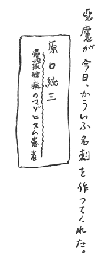
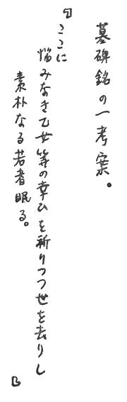

［＃ページの左右中央］
衆人皆有以。而我独頑似鄙。我独異於人。而貴食母。
――老子第二十絶学無憂章――
［＃改丁］
ところが今日、僕はふと「寒い」と思ったのだ。
僕はきっと夢を見て来たのに違いない。
僕はきっと夢を見て来たのに違いない。
―Etudes  ―
―
―一明君
「自己の思想を表現してみることは、
右の最後の反省と共に、僕はこの小さな三つのノートを、君の手に渡そうと思う。
長い間筆を捨てて来た僕が臨終の直前まで来て、まだ一度も試みたことのないこうした感想録を作らずにおれなかったのは、やはり弱気の
君に渡すとすれば、もっと綺麗に、粗雑な文体も直した上で手放したいのだが、僕にはもうその気力がないのだ。我慢して受けてくれたまえ。
君はおぼえているだろうが、僕はよくドイツ人の悪口を言うときにこう語ったものだった。「ゲルマン人の思考の仕方は、城廓を築いてその中に安住する」このエチュードを記した後で、僕は自分の書き方に対してこの評言を与えざるをえない。それから、考えて見ることは、言葉を裏切った僕自分が、時にはやはり言葉で、動いたということだ。自分の思想を裏づけようとする時には、そうなるのは当然だし、プラトンの対話篇におけるソクラテスは、常に僕らの後を追い廻している。それにしても、僕の認識は、いつでも言葉の届かない所を歩いていたはずだ。
僕が君たちと離れて暮らした、昨年の暮れから今年の春にかけて、書き溜め、そして破り棄てた数々の詩篇や創作、自ら誇った「新しい日本語」を残すほうが、どれだけ君にとっては好いことだろうね。しかし、白状するが、僕には再び思い出して見る元気もないのだ。僕は疲れている。
一明君
世の中には人の言ったことばかりを覚えている者もあるし、その声の主調低音だけしか記憶に残らないような種類の脳髄もある。
表現は
別離の時とはまことにある。僕もまた、この夜、一人の仲間を葬ったのだ。
朝が来たら、友よ、君たちは僕の名を忘れて立ち去るだろう。
昭和二十一年十月朔日
赤城山にて
原口 統三
橋本一明君机下
［＃改ページ］
Appr cions sans vertige
cions sans vertige
l'tendue de mon innocence.
cions sans vertigel'
tendue de mon innocence.―Arthur Rimbaud―
＊１
告白。――僕は最後まで芸術家である。いっさいの芸術を捨てた後に、僕に残された仕事は、人生そのものを芸術とすること、だった。＊
２
傷のないところに痛みはない。僕にとって、認識するとは、生身を＊
３
「まだ傷つけ忘れた場合はないかと、安全地帯を探して廻る臆病者たち。
刃を捨てようというのか。
彼らの顔に刻まれた大小の
もはや、あの、生地のままの肌を持った、素朴な人々の住む故郷に彼らは帰って行けない。
そこで、こうした賤民たちが、「認識者」の刃を後生大事と、看板代わりにぶら下げて、お互いの顔貌を見せあっては安心するというわけだ。
＊
４
Quelle  me est sans dfauts ?
me est sans dfauts ?
me est sans dfauts ?僕がかつてお目にかかった「認識者」とは、なべて皆、醜怪な賤民たちにすぎなかった。
刃を捨て、
＊
５
論理は、必ず逆襲できるし、破壊することも可能である。＊
６
各自が異なった数学を持つ。僕には最も自分に誠実であるためには、いっさいの表現を拒否せねばならぬ、ということが最も確かなことに思われた。そこで、僕は既成の数学を疑って見ることができるようになった。＊
７
朔太郎の一句を想起しよう。「思想は一つの意匠であるか」
＊
８
「幸福」の私生児、僕はいっさいの契約をご破算にした。僕の仇敵は「虚無」という怪物であり、僕は至る所で彼の兄弟に出会した――「安心」と「満足」と。最後に僕は、勝利の女神と対決した。
＊
９
パラドックスは遍在する。いっさいの表現はこれを逆立ちして眺めることができる。僕が「見る者」であった時には、よくこう語ったものだ。
「俺の眼にとっては、天が下にあり、地が上にある、と」
事実、そう信じたのだ。
今日、僕はすべての「見る者」を無視する。
＊
10
僕は進歩をいったい、奴隷が
＊
11
伝えうるものの領域を究めた結果、僕はその境界を超えてしまった。今日、僕は、自分の語ること、考えることが、皆目嘘八百にしか感ぜられぬのだ。
＊
12
われわれの誠実さを脅かす、無数の僕が育った家。父母、兄たち、姉たち。ここでは、見慣れた家具の類が、家族の一員となって、僕を甘やかそうとする。
僕にはその居心地の温さが堪らなかった。
僕は冷たくありたかったのだ。「精神」への冒険に旅立ちたかったのだ。それはいっさいの温いものを拒否すること、すなわち「死ぬ」ことに帰着する。
理解できない「末っ子」の死を前にして、お母さんはどうするだろう。
＊
13
「考えるとは表現することである」現代の百科辞典にはこう書いてあるそうだ。表現はどんな風にでもあり、したがってどんな考え方だって存在しうる。
思索とは表現の可能性に対して行なわれる精神の賭博である。
僕の自意識は、思想のルーレットを己の意のままに廻すことができた。だが賭金などに用はなかった。
＊
14
そこで僕は賭博場を飛び出した。外に出れば寒かった。
もはや僕の信ずるのは、自分の肌の感覚だけだ。
＊
15
礼儀正しい芸術家たち。彼らの間のだれが、自分の居間では
＊
16
いや、「精神」の厳粛な書斎にまで、憩いのための安楽椅子を備えておく輩。――これがランボオの最も＊
17
けれども、僕の潔癖さは、次のような腹立たしい矛盾を見る。西洋人の作品は、芸術であれ、哲学であれ、必ず「アルバイト」の臭いがする。
強制と義務と正確への努力感と。そして生存競争の意欲。
ところで、支那の古詩には、こうした臭味がない。「文学を楽しむ」という
＊
18
われわれの生涯はさまざまな自分を持つ。阿藤先生は第一日の講義で、支那人の賢明さを、次のように示した。「支那人は個人の名称を弁別する。＊
19
僕に、自意識がついには無意識を装いうるということまで到達しなければならなかった。けれども、それは外見上のことだった。僕はそれを内心の表象の世界にまで押し進めねばならぬ、と考えた。つまり、すべての表現――われわれの中に存在し、外に存する、image――言語・論理・数学に対して、苛酷になることであった。
＊
20
何故なら、「
九・二四
＊21
二種類の孤独について。窓の内側に住む孤独と、窓の外側に立つ孤独と。
むかし、僕の幼い魂は、終日、窓ガラスに頬を寄せて
そして、自分を孤独だと歎いたものだ。僕の詩人は、すでにこの時に生誕していたのだ。
けれども、僕に帰ってゆく家がなくなってから、僕は行きずりの家々の窓の中に、かつての「空想児」の姿を見つけては、彼らの平和な一日を祝福して歩くようになった。
そして僕は、これこそほんとうの孤独だと、思った。
＊
22
窓のある所に孤独がある。今日、僕は己を孤独だと言うまい。僕はもう「見る者」ではなくなったのだ――窓を捨ててしまったから。
ところで、これこそ真の孤独ではないだろうか。
僕はやがて死ぬ男だ。
＊
23
僕にはお母さんのお乳が足らなかったのか。お母さんの愛情が甘過ぎたのは。＊
24
批評とは、他人の中に自己のシルエットを見いだすことにほかならない、というサント・ブーヴの言葉。しかし批評することは、どこまで行っても自己を許すことである。つまり自己自身を批判する最も厳しい眼をもつことは、生きている間は不可能である。
ここまで到達した後に僕は死を決意した。僕は「より誠実であろう」とするものであって結果を恐れるものではない。僕はどうしても自分を許せなかったのだ。
＊
25
「報いはない」悪魔はどこまで行っても、この言葉を
「救いはない」
僕の胸はたえずこの声にしめつけられる。
「
「勝利はない」
だからと言って、僕が敗北したと、だれが言えよう。
＊
26
僕の精神は血にまみれて歩く。＊
27
正道君の僕への批評はこうだったろうか。――君はもともと、独りきりになったら生きて行けないほどの寂しがり屋のくせに、側に人が来ると、
もっともだ。僕くらい、いい気な男はない。
＊
28
如意輪寺で、道ちゃんと玲子に贈るものはないだろうか、と僕の内奥の心が迷っていた。
その時、お婆さんは誘うような眼で言った。
――富士絹だっせ。
この言葉が僕の意志を決定した。
僕はお母さんと暮らしていたころのある日を想い出したのだ。
僕はいつものように駄々をこねた。何と言われても、すかされても泣きやまなかった。
ふと、泣き疲れて見上げた目に、お母さんの淋しそうな、涙にうるんだ視線で、やさしく僕を
僕は机の上にあっただれかのハンカチをとって、お母さんの膝の上に甘えかかりながら、
お母さんの眼が笑った。そしてハンカチを自分の手にとって、僕の顔を拭ってやろうとしながら、
「富士絹ね」と無心にぽつりと言った。……
あとで道ちゃんに尋ねたら、あのハンカチは人絹だった。
＊
29
他人の家に行くと、かしこまって、気兼ねばかりした僕――自然な大胆さを装おうとすると、決まって飛んだ失敗をする。僕は生まれつき、臆病な、風邪をひきやすい箱入り娘なのに違いない。
＊
30
故郷はない。それなのに、僕は己の故郷以外の土地には住めない人間なのだ。＊
31
親戚ほど、不愉快な他人はない。おかしくもないのに、笑顔を見せねばならぬ理由がどこにある。＊
32
僕は＊
33
日本では年じゅう＊
34
橋本を橋本のままにしておくこと。僕にはどんな文体も可能であった。多少の幼稚さをまじえ、
他人をそっとしておこうという望みは、気弱い感傷でなければ、極度の
かつての僕なら、他人の自尊心の破壊を楽しんだに違いない。
いずれにしても、
＊
35
他人を許容するのは己惚れからにすぎない。ちょうど、他人を赦さぬことと同様に。さて、他人を頭から無視する人間は、かって気ままにふるまえるか。けれども、彼が勝利の感情を
＊
36
かつて多くの傲慢な「認識者」たちが、自分の周囲に集めた仲間、弟子。「頭の中にあるものを出す」「一ぱいに満ち溢れた蜜がこぼれる」
ニーチェが巧みに弁解するところのこうした必然性を僕は拒んだ。
自己の思想の中に他人を化そうというこの願望は一つの弱気を含む。僕は「弱気だ」、と簡潔に言おう。
＊
37
自意識は常に必然性と妥協しない。＊
38
現代人は自分の膚の感覚を信用しなくなってしまった。本当に現代人は契約の中に明
さを見いだす。しかも彼らを安心させるのは、契約を作ったのも彼らだと考えられるからだ。人間によって生み出されたものが人間を支配する。
現代人は己惚れた奴隷である。
ニーチェ以来人類は「貪慾」を肯定している。
＊
39
ヴァレリイと共に、僕は明さを尊ぶ、と言おう。けれども僕の明
さは、あくまで僕一箇のものだ。それは社会学者が「利己」と称して非難するごとく、破壊的なものではない。何故なら、それは沈黙しているからだ。真の明
さは清いものである。それは利己主義者のように「所有」を受け入れはしない。＊
40
知性。二十世紀の舞台に登場したこの花形役者に従えられて、我が世の春を謳歌するお歴々の名は、――形式・表現・連関………………。それは当然、「社会」と「全体」とをクローズ・アップするだろう。それがやがて「所有」への欲望と結びつけられる時に、あの
＊
41
「われわれはまじめに生きるということと、時折りひたむきに創作すること以外に何ができるでしょう」このほうが正確であった。彼は文学をより愛するに及んで、
「ここに言う文学とは、単に文字によって書かれたものを意味するに止まるものではない。いわばそれは文学に底流するかの情感、すべての人間の弱さ、惨めさ、醜さを超えて行こうとする人間精神の勝利であり、マンのいわゆる『にもかかわらず』によって成就された人間の業蹟なのだ」そして「………………これこそは芸術のすべて、文学のすべてなのだ。そして、この意味における文学こそまた人生のすべてなのだ」と壮烈に絶叫するのだ。
賢しらの
しかし、甘さはやはり排斥せねばならぬ。
真の詩人は詩論を書かぬものであり、真の信者は信仰を説明しないものである。
＊
42
哲学者は真理を語りはしない。彼は作品を書くだけだ。＊
43
日本の自称哲学者たちは哲学は文章の外にあると思っている。言語学と文法とを勉強しないで哲学ができるわけがない。
＊
44
沈黙を信じない人は、スタイルだけを信じればいい。＊
45
表現とは、所詮自己を許容する量の大小のあらわれにすぎない。それは、正確に対して忠実・厳密でない、ということだ。
右の考えから、次の「悪魔の試論」へ。
人間は、自己の真情を吐露しようと欲することにおいて、罰せられている。
＊
46
他人と話す時には、正確さは実証によって裏づけられる。だから、僕の会話はこうなるだろう。
「『文は人なり』だって！ 『人』なんて怪物が存在するものか。何といっても文は文だよ」
＊
47
僕は不純なもの、徹底性のないものをすべて唾棄した。ところですべての「イズム」は「イズム」自体に忠実でない。すなわちどこかできっと妥協しているのだ。僕が最も憎悪したのは、「唯物論」「現実主義」そのものに対してではなく、世に現われた唯物論と現実主義の曖昧さ、不透明さに対してである。信仰のない「イズム」など僕には用はない。
＊
48
孤独への讃歌。唯物論はどこにでも領土を拡げる。
精神の世界にも唯物論は住んでいるのだ。すなわち、ありとあらゆる表現は、精神界における物質である。言語は物質である。
言語は精神を
僕においては、精神はあくまで言語と区別される。それは表現とは別箇に独立したものである。「精神」という単語の受けとり方の問題になるなら、僕は精神をこうしたものだと定義すると言おう。僕はこのけっして人に知られない、沈黙した実体の存在を信じているのだ。
それは「精神の肉体」と言う僕の発明した言葉で指摘してもいい、実証論者たちは、これを亡霊だと揶揄して凱歌をあげるだろう。それは当然だ。けれども僕はやつらを無視することができる。僕はいつでも、だれにも知られぬ孤独の中にのみ誠実さを見いだすのだ。
＊
49
いかなる思想も、なんらかの「妥協」の衣を着せて提出しなければ通用しない。＊
50
サント・ブーヴがユーゴーへ与えた「われわれは、自己を隠し過ぎるという悪い癖と、あまりに告白し過ぎるという悪い癖を持っている」
＊
51
「神なしにすますことはできない」このパスカルの言い方、あるいは、
「われわれは良心というものが存在するかのように行動しようではないか」という鴎外の声色。
僕は、実証論者たちと共に、きっぱりと、しかしながら沈鬱にこう言おう。
「気の弱い夢想児の寝言にすぎぬ」と。
しかし、かかる言葉は、今一度沈黙の中に鍛え直すだけのものを内に秘めているのではないか。
僕は Pens
es を、自分の胃袋の中で、思いきり「パスカル。私にはお前の手が見えすぎる」と毒づく時の、ヴァレリイの眼の奥を覗くこと。
＊
52
今日、僕の悪魔が来てこう告げた。「過去を憎み、ありとある思想に反逆し、詩を捨て、家を捨て、肉親の人々にさえも冷酷な瞳を投げつけ、そうしてお前の周囲のすべての人に、事物に――。
これは結局は、お前自身の血を否定することではなかったのか」と。
僕は黙って、この判決を聞いてやった。
＊
53
Mon dieu, mon dieu, la vie est l ,
,
〔 Simple et tranquille.〕
,〔 Simple et tranquille.〕
――Paul Verlaine――
名古屋で玲子が教えてくれた讃美歌。
――仇に過ぎし日の、み赦しを願う。
カトリックとは全く魅力のあるものだ。
ボオドレェルよ、握手しようではないか。
さて、その後に別れるのだ。
＊
54
静かに独り、夕暮れの枕べに祈りを捧げている少女の姿を、僕は美しいと思う。けれども、僕の心は、すでに、現代では一匹の野獣でさえ、信あつき少女の仮面を装いうるということを知っている。＊
55
君たちは、信仰を持たないと公言して誇らしい顔をするが、それは少しも自慢すべきことではない。僕は信仰を尊敬する。何故なら、信仰はお
＊
56
僕は黙っている海が好きだ。波の穏やかな日の海が好きだ。けれども僕が、語らない海を愛するのは、それがすばらしい語り手であることを知っているからだ。
静かな忍従の衣の下にやすらう黎明の海上にも、きっと、あの壮絶な暴風の夜半が、怒号の夕べが、泡立つ正午が約束されているからだ。
だが、これは悲しいことではないのか。この約束なしにわれわれは海を愛せるであろうか。
人は海べに来て、はるか青一色の沖合いに砕ける幾つかの白い波頭を認めなければ、最後の微風も死に絶えた大気の中に、かすかなざわめきを聴きとらなければ、衰えた秋の陽を浴びて、じっと動かない灰色の砂丘の上に、無残な嵐の一夜の痕跡を踏まなければ、おそらく退屈に耐えずして
僕が語り手でなくなることを嘆くまい。
＊
57
僕の死を知る時の他人の思惑への予想。一、ばかでも言うこと。皮肉を籠めたつもりで嬉しがるばかもいる。
「原口が死んだって？ やっぱり生きてるのがいやになったのさ」
二、厳めしい物知り顔がこう言う。
「これはまさしく人生への敗北である」
三、メカニスム的に語る生理学者。これはなかなか気持ちがいい。
「人の死に方にもいろいろあるが、なかには変わったのもたまには見つかるね、食慾過多で青酸加里を飲んだり、運動神経に狂いを生じて、自分の心臓にナイフの切尖が向いてみたり、恋水病という奇妙な発作で河に飛びこんだり……。
要するに死とは、脳細胞の活動停止によるところの……」
四、「人生に安心を見いだせなかったのだね」
「いや、安心という弱点が充満していることに安心できなかったのだそうだよ」
「ふうむ――どこまで
五、詩人曰く「原口は人生に最初から失恋して生まれて来たような男だったよ」
＊
58
彼は僕より年が三つ上だ、というそれだけの理由で、僕に向かってまじめに話ができない。「先輩」の虚栄心は、「恐るべき後輩」に対して、自己の弱点を守ろうとしながら、こういうお世辞と、皮肉とを浴びせかける。
「君は要するに天邪鬼さ」（ついでに「ばかだ」と言いたいのだが、言えないのだ）
また、「君は一個のピュリタンだ。僕には、君の中にボオドレェルやフロォベルに見ると同じ、（ここまでいって、ちらっとひとつ顔を横目で見る。己惚れちゃいけないよ、という意味か。ふん、僕を詩人や小説家と一緒にされて堪るものか）禁慾者、修道僧の面影が見えるんだ。それなのに、君は他人に対しては、同じ修道僧であることを求めない。そっとしておきたいんだね。殊勝なことさ。でも、それはトニオ・クレーゲルの感傷にすぎないよ。君がピュリタンである以上、君は他人にもピュリタンであることを要求する権利がある」
その時、当の「天邪鬼」は答えたものだ。
「権利ですって！ 義務ですって！ ふん、まっぴらご免だ。それに僕がピュリタンだなんて、どうしてわかります。
それどころか、僕は『
さあ、僕が死んだら、思う存分「ばかなやつだ」と言いたまえ。
＊
59
彼は時々しんみりした顔でこんな話もする。「君がどんなに、『詩人じゃない！』って言い張っても、君の本領はやはり詩人だよ。
正直に言えば、僕は君の詩以外のものは読もうと思わないね。『断頭台の時刻』を書いた時に君は筆を折るべきだったのだ。
君はあの時、夢と共に自分自身をたたきつけてしまったんだよ。詩を失ったら、君にはもう何も書けないはずじゃないか」
それから意地悪い顔をして、
『窓蔭に流れる四季』には、もう君の姿はないね。もともと君は小説家でも、哲学者でもないのに、「あんなものを書こうとするのがすでに、君が俗っぽくなった証拠さ。――つまらない我を張るのはよして詩を書きたまえ、詩人でない君なんてありはしない」
僕はこの時も彼を冷笑したものだ。
「二十世紀に宿命などあるものですか。『額の
詩人変じて俗となる、なんて、現代の社会では珍しい事件じゃありませんよ」
しかし、自殺の計画はすでにこの時、僕の心に
＊
60
いかにも、僕は他人が僕と同じ道を行くことを望まない男である。僕においては、自分に言い聞かせる言葉と、他人に語る言葉とは常に劃然と区別された。理解されようという願い、これも一つの弱気にすぎない。
＊
61
僕は、誘い合って断頭台に登るような殉教者を軽蔑する。＊
62
無関心の徳を讃美しよう。ところでそういう僕は、じつに関心の多い男ではなかったか。＊
63
無関心の徳について。気持ちのいい親切は、ある程度の無関心を含むものである。何故なら、それはわれわれに、自由な余地を残しておいてくれるからだ。親切も、度を過ぎるとわれわれを不快にする。
＊
64
清岡さん、橋本・都留・通ちゃん・玲子。これらの群像を遠目に眺めて、「愛する」と肯定しよう。
「愛」がなんらかの卑劣な妥協を含むなら、棄てること。
「安心」は常に僕の敵ではないのか。
＊
65
何人も、自分の家庭では偉人ではない。そこでは自尊心が首をもたげる暇がない。けれども、自尊心というやつは風邪を引きやすいものだ。だから、人々は朝になると外出して、自尊心を活動させ、夜になると家に帰ってそれを寝かしつける。＊
66
生活するためには家庭を持たなければならない。われわれの自尊心は、温い着物がなければところで、精神とは、自尊心の活動する世界のことである。
僕の兇暴な自尊心は、あらゆる
＊
67
愛はまさにわれわれの故郷に違いない。僕は故郷を持たぬ。＊
68
＊
69
＊
70
ベルグソンの純粋持続。僕はこの持続 ＝dur
e という言葉が好きだ。ここには「忍耐」の響きがある。「
表現への慾求が生む理想論。
これを「ロマンチスト哲学」と呼ぼう。僕の眼には「許容」すなわち弱気から生まれない表現などありはしない。
果実が落ちるのは、これをささえる
落としてしまうことは、この誠実さに謀叛する行為である。
「自然なこと」「必然性」
今一度、これを許容することを
しかも、われわれの
ならなかった記念碑を惜しむまい。「新しさ」は、常に未来に向かって立つ現在の自己の姿の中に住んでいる。
自意識の極限について考えて見ること。
＊
71
「数学ほど、私に明晢に［＃「明晢に」はママ］見えるものはない」このような言葉の前に僕は意地悪かった。
より明晢な［＃「明晢な」はママ］こととは、より冷たい眼を持つことであると僕は考えた。この「冷たい眼」を僕は自意識と名づけた。
いっさいの「許容」「妥協」「弱気」これを僕は「曖昧さ」と名づけた。
そこで僕は「形式」を持たねばならぬ、ということ、「生きるとはなんらかの意匠を与えられることだ」という問題の前に腕組みした。そこでこの「許容」に身をもってぶつかることだった。
僕の純粋さが、懐疑の最も冷たい眼、すなわち、「死の眼」を持つことを要求したのだ。
認識するとは、われわれが生まれ落ちる時に与えられるもの、すなわち、豊かな生命の衣を少しずつでも
血は絶え間なく流れて、刻々に僕の身体は冷えて行った。
精神のより深奥を目指して進むものは、より「生きること」から遠ざかるのである。
＊
72
西洋人と自然について。気の毒なルッソオの表情を研究してみよう。
＊
73
「昔ながらの城壁の中に眠る東洋。その生命の曠野は広く豊かであった。
目覚めている西洋は、常に城壁を嫌悪して、これを少しずつ破壊して行かねばならなかった。東洋を嫉んでこれを起こそうと努めながら」
僕の中の歴史家はこう語る。
ところで歴史家は歴史家だけに止まるものだ。
歴史家が人間の行為のすべてを決定することは、断じてない。
＊
74
可能性を掘り出すこと、それは賭博をすることだ。言語とは思想家のためのルーレットである、と僕は前に書いたと思う。ところで金を目当ての仕事が、僕は汚らわしかった。
思想家の情熱は、「救済」という贋金貸に対して集中する。
金が智慧を生む、とはよく言った。
賭博場を飛び出した僕はやがて餓えに
＊
75
士・農・工・商。沈黙を尊重する僕は、旧世紀のこの国に住んでいた武士の一人の亡霊なのかもしれぬ。
表現は、商売であり、取り引きである。
＊
76
武士は食わねど全く僕は、この諺が好きだった。
＊
77
僕は、何の躊躇もなく清岡さんに尊敬を捧げて交われた日々を懐しいと思う。沈黙した清岡さんに対して僕は信頼していたのだ。彼が何を言おうと、僕はけっして怒らなかった。＊
78
「勇気」はしばしば「傲慢」「無知」「粗暴」と結びつく。ゲルマン民族は、常識的な事を、非常識な熱情をもって礼拝する。
僕が読んだドイツの哲学者たち、カント、フィヒテ、ヘーゲル、ショーペンハウエル、あるいはシュペングラーが話しをする時の顔つきは、俗悪なほど深刻である。
「ねばならぬ」と言い切ることは確かに男らしいことである。しかし、たいていの場合、それは脳髄の粗漏と、田舎君子の本能的な
さて、気の利いた悪口は、僕の中に政治家にまかせておくこと。
僕は、ドイツ人の太い地声に、「明
ならざる」ものを嗅いだのである。＊
79
僕には不断に「ねばならぬ」が存在した。＊
80
Dlicatesse. 僕は繊細さを鍛えあげる、というドイツ人には恐らくわけのわからない仕事を試みた。＊
81
Montaigne, Pascal, La Rochefoucauld, La Bruy re…………
re…………僕の通った道の角々には、いつも、これらフランスのモラリストたちの銅像が
＊
82
ニーチェ。フランスに留学したドイツ人。＊
83
思想とは要するに趣味の問題である。＊
84
価値は表現の中に住む。そして、精神は表現の中に住もうとする。＊
85
われわれが「価値」に「表現」は永遠に不実な、気まぐれな、精神の恋人である。
＊
86
「価値は時と共に転換する」すでにこの箴言の存する現代にあって、人は、自己の中に政治家を所有しなければ、思想界の門を潜ることはできないであろう。何故なら価値の標準を決するのは政治家の爼上においてなのだから。
思想の価値は、表現方法を舞台とする巧妙なかけ引きと、
今日、思索を政治だと考えられぬ者は愚の骨頂である。そしてまた、政治家であることに誇りを感ずる思想家も
僕は政治家ではない。僕は価値そのものを抹殺する。
＊
87
「謙虚な政治家になれ、なんてばかげた注文さ。政治の元来の本質が、貪慾な傲慢なものなのだ。より強力な政治とは、より、この本質の羽を伸ばさせてやることだ」こう、悪魔は思想家たちを、けしかける。
＊
88
思想の鍵を握る者は、言語学者である。＊
89
「理知の人は行動しない」ドストエフスキーの描いた、ニコライ・スタヴローギンや、イワン・カラマーゾフの面影を想起すること。
「理知の人」は、恐らく現代人にとって、最も魅力ある偶像である。
＊
90
自己を「理知の人」らしく見せたいと思う虚栄と、そう思いこみたがる厚顔無知とがある種の現代人の頭脳を支配する。＊
91
「いかなる行動からもその人を判断することはできない」この原理に現代の人々は飛びつくのだ。もともとかかる言葉は、自意識のもたらす可能性の問題に関して、自己に忠実なもののみの知っているものである。
しかるに「無知」にして、冷静ならざるところの現代人は、自己の行動に関しては、「他人は俺の行動から俺を判断してはならない」という防禦の
こうした現代人の多くが、他人の行動には毛を吹いて傷口を求めるがごとしといおうか。
＊
92
「理知の人」とは生活の匂いうすき、「影の人」である。＊
93
ドストエフスキーにおいて僕の見る、「理知の人」の幻の特徴――＊
94
「表現は信用できぬ」「人間の表現にあっては、いかなる確証も存在しない」われわれがその中に生活している、こうした環境の貧しさを逆用する図太い人間は、政治家になる。それゆえにわれわれは日常、いたる所で「政治家」に出会わすと言えよう。
この政治家が、これを強味だと思いこむ時に、彼もまた、精神世界における賤民の群れに堕するのだ。
＊
95
政治家的生活に酔うものは所詮政治家だけに止まる。＊
96
僕は政治を職業であり、趣味であると見なす。＊
97
沈黙した精神を、あらゆる＊
98
冷静。「生活するとは、それが全く機械人形と同じ操作でない限り、多かれ少なかれ、精神の誠実さに反逆することであり、われわれの冷静さを幾らかずつ奪うものである」
こう記した上で、僕はできる限り冷静になろうと願う。
＊
99
懐疑と明とは手を携えて進む。＊
100
「汚穢に満ちていること、これが人間性なのだ」とニーチェは説く。そして、「現実の汚濁を恐れずに抱擁したまえ。われわれの
けれども、彼を起ち上がらせるものは何物だろう。彼を動かすものは何物だろう。もし、彼を引きとめるものがあれば、彼はこれを拒否するに違いない。僕にとってはこれが「汚穢」と呼ぶものなのだ。
「起ち上がること」――この行為をさせるのは、彼自身の内奥にあるものであり、「人間性」という普通的な名詞で片づけるわけには行くまい。われわれは一人として同じ顔を持たぬ。われわれの独創性は、「立ち上がる」時の個々の姿に存するのである。
いったい、「必然性」という名詞を発明した人間は、「万象は例外なく必然である」と始めから確信していたはずだ。
僕には、必然性を拒否するという必然性が存する。
どこを向いても許容と、妥協とばかりではないか。ニーチェの最も偉そうなところが、僕から見れば、最も狭い、卑怯なところだ。
汚れたものを、僕はあくまで排斥する。
ニーチェよ。もし、君が徹底した宿命論者なら、宿命に反逆するという宿命も存在しうることを否定しまい。
＊
101
肯定が負担にならないように要心したまえ。ニーチェは重荷を担いで、苦しまぎれに威張り散らす。
＊
102
「汚濁の過去。屈辱の過去。これを肯定して、その上によりよき生を築く」と。いかにも男らしい口振りである。しかし、ここには一つの嘘偽がある。
ニーチェの眼に、全き肯定者の姿が見られたか。彼の心は、絶えず不安と後悔につきまとわれていはしなかったか。この不安には男らしくないものがある。つまり真に肯定しているわけではないのだ。
さらにまた、ここにある一種の安定感。――「ここまで来たのだ」という無用の自慰の
彼は土台を必要としたのである。その弱気のゆえに。
＊
103
「予定」はまた、一つの安心感を必ず含む。それは過去を振り返るときの怯懦の影の延長にすぎない。＊
104
僕はつねに、現在、立っている場所から始める。そして次の一歩に誠実さを籠めることだ。＊
105
予定を拒絶すること。安定地帯を探るのは、精神の世界の厳しい空気から、幾らかでも逃れようとする衝動のあらわれである。＊
106
「たえざる、ねばならぬ」とは、「絶えず『許容』と『妥協』を排して進むこと」であり「より明晢に［＃「明晢に」はママ］なること」だ。＊
107
歴史家は常に、行動する者の背後にしかおれない。＊
108
論理はいつでも、われわれが立ち上がる処に現われる。だから、論理を崩壊させるには、これに挑戦しさえすればよい。つまり、一歩動くだけでたくさんだ。
＊
109
予定を捨てるには大きな勇気を必要とする。＊
110
むかし、ギリシャ諸地に林立して、束の間の栄華を誇った、あのタイラントたち。今、西欧精神の辿り来った幾多文化の変転流相の歴史を望む時、僕は、その流れの最も遠い泉――伝説と神話との、ほの暗い叢林と
＊
111
過去を知っていると信ずるのは愚の骨頂だ。われわれが過去を
過去に向かって立つ時、われわれの眼前にあるのは、無数のまことしやかな、虚妄の道路である。
過去について、われわれは頭の中で小説を書く。
＊
112
「時の流れにおいて変わらないもの、それは『形式』だ」と人は説く。変わらないものは何もない。数学は決して時間と握手せぬ。
＊
113
レアリスムとは、過去を＊
114
ニーチェよ。「…………しようではないか」というあの懐しい＊
115
机に向かって休みなく代数の計算をつづけている中学生。僕の代数の公理は「純潔」の一語であった。そして、この公理に違うものはすべて誤謬にすぎなかった。
「解答を得よう」というあの願いが、やはり、僕のペンの尖を鞭打っていたのだ。
＊
116
「……すでに禁断の果実を食べた人間に、かかる悩みのあるのはやむをえまい」僕はこうした弁解が不潔で堪らなかった。
それほど悩ましいなら、やめたらいいじゃないか。
＊
117
「精神は嘘偽によって、ますますその光輝を増す」と僕の悪魔が、お世辞たっぷりの陥穽を張る。
だからと言って、僕の精神は嘘偽にお辞儀はしないよ。
簡明に言おう。
精神は嘘偽を支配するのだ。それが嘘偽を蹂躙するのは、沈黙の夜が訪れる時だ。
＊
118
精神は真実と嘘偽との支配者である。＊
119
卒倒術――自意識はその極限において自失する。どこででも、意のままに、しかもほんとうに卒倒できる人間はいないか。＊
120
僕は脳髄に血を集め過ぎた結果、ついに頭蓋骨が爆発して血は消散した。橋本の家で貧血を起こして卒倒した時、僕の
＊
121
認識とは、脳髄から血液を＊
122
わが隠し芸。僕は逆立ちして、人生をひっくり返し、
＊
123
表現への拷問道具。――逆説・ナンセンス・無視・抹殺。どれもりっぱなものだ。＊
124
天邪鬼は、どん底において＊
125
純潔。――この最も兇暴な自我主義。九・二五
＊126
突発的に起こる近ごろの記憶喪失。ベルグソンの示したように、第一が固有名詞。さっき、小さな玲子よ。僕はお前の名前を想い出せなかった。
その後で、僕は何か身のまわりに足りない物があるような気がして、押えきれない焦燥に駈られた。机の上に古い向陵時報があり、その上にふと、僕は「清岡卓行」という名前を見つけた。そこでわかったのだ。
――パイプだ！
と僕は気がついた。あのマドロス・パイプは橋本にやってしまっていたのだ。
僕は悲しくなりながら、清岡卓行とマドロス・パイプとをこういう推理で結びつけてみた。あたかもポーのデュパンがしたように。――僕のマドロス・パイプはブライヤァだ。ところでブライヤァとは薔薇の根であり、薔薇の根で作ったパイプは上等だと、始めて教えてくれたのは清岡さんだったわけだ、と。
Nonsens !
パイプ。いかにも清岡さんの風貌に似合ったものであった。
ボオドレェルは失語症に
――ボオドレェルが一生に儲けた金は、一万五千八百九十二法と六十サンチームだった。
この六十サンチームは、安葉巻二本に変わる、と。
＊
127
この不安が始めて起こったのは二週間前に独りで赤城に登った折りのこと。大熊さんの所で、僕はレコードを聴いていた。窓の外では霧雨が林の上に
ショパンと、リストと、モーツァルトと、ドビュッシイと。最後にバッハのフーガとアリアとを聴いて小屋に帰ったのだ。ベッドに座ってから僕はふと思いあぐんだ。
今のフーガはピアノだったかしら、と。この耳で聴いたのだし、始めからピアノ・ソロばかりを選んだのだから、そうに決まっていたのだ。それなのに、どう考えてもますますわからなくなった。夜、僕は再度訪ねて確かめねばならなかった。
Plaisante raison q un vent manie,
un vent manie,
et tous sens ! ――Pascal――
＊un vent manie,et
tous sens ! ――Pascal――128
「回想への冷淡、潔い別離。――なかなか勇ましいことだよ。そこで記憶喪失となって大団円か。全く最初からの注文どおりさ」悪魔が夢の中でこう
「過去を救おうとしなかった者への天罰です」
いつも味方してくれる天使でさえこう言った。
「迫害妄想狂の畸形児め。天邪鬼に恰好の断末魔だ」
民衆がこう
いつのまにか、ピアノの音がやんでいた。そして皆が声をそろえて歌った。「報いが来たのだ、この変わり者！」その合唱はしだいに大きく伝わって行った。「報いが来たのだ、この変わり者！」僕はその中に、若々しい乙女たちの声を聞きとめた。
さっきまで、無心にピアノを
僕ははっきりと耳にした。
「報いが来たのだ、この変わり者！」
僕はこの文句を
けれども、もう一度、あの少女たちの朗らかな、高い声をききとった時に、僕は微笑して
＊
129
必要もないことではあったが、その場の憤りから、自分の過去の作品を破り棄てた後、あるいはまた、表現への不信から、意識して制作への心の動きを断ち切った時。僕の虚栄心の奥底で、悲しそうにつぶやいていた慰めの歌はいつもこうであった。――一人のモーツァルトのかげに、百人のモーツァルトの死んでいることを忘れるな。
＊
130
すべての物が時と共に＊
131
人々が自己の通って来た道を顧みる眼は全く錯覚に満ちている。それはもはや死滅しているのだ。彼らが今なお生きていると信ずる過去は、色僕は記念碑に向かって、次々におさらばした。「足もとの土台がぐらついているぞ」と
いったい土台の上に立ってると思うのが、虚妄なのだ。
＊
132
われわれは歴史によって動かされるのではない。われわれが歴史を作るのだ。＊
133
立ち止まることは、すでに身のまわりに、憩いと慰安との影を落とすことだった。僕の潔癖さがそれを嫌悪した。＊
134
感傷・傲慢・虚栄。――これらは皆、「怯懦」と「曖昧」の同義語である。＊
135
「偉大さ」には、たいてい、不純物の匂いがする。＊
136
大作家たちに大作品の制作の秘訣を尋ねてみたまえ。嘘つきがこういう。「すなおに、謙虚にぶつかることです」
賢明な者は黙っている。
感傷家が次のように語るだろう。
「やっぱりある程度、生意気だったんでしょうね」
＊
137
自分の持ち場を離れなかったために、落ちてきた煉瓦の一片で命を失った大工。僕の自殺もこんなことになるのだろうか。
＊
138
中野がこう僕に語った。「君みたいに、
ただそれだけのすなおな批評であったか、あるいは中野の胸にいつも潜んでいる歴史学者、類型学者としての眼が、こう僕にレッテルを貼ってくれたか、それは知らない。
＊
139
表現の偽瞞と、誠実さとの問題に関して、確かな認識を持ち、自己の思想を提出する方法について許容のない判断の眼をもつこと。このことが僕をして何も言えなくすると共に、何でも言えるようにした。
＊
140
僕が許容を憎むのは、許容は許容を生むからである。＊
141
「――人間は社交の動物である。それゆえに社交術の完全な習得こそ、完全な人間となるゆえんである。――過去がわれわれの今日をあらしめた。それゆえに過去の完全な認識によってわれわれは現在を完全に知ることができる。
――精神は嘘偽によって磨かれる。それゆえに嘘偽を完全に身につければ、精神は完全な光輝を発する」
悪魔の語法はいつでも同じだ。
「それゆえに」はまっぴらだ。それは次の「それゆえに」を生むだろう。僕にはもう接続詞の用はない。僕の文章はばらばらの断片だ。
正確な連鎖はけっしてありえない。
僕が詩人だった時は、いかに離れ合ったイマァジュといえども、見事につなぎ合わせてみせたものだ。
――人間・過去・精神。所詮は定義上の問題に落ちつくのだろうが、僕はいかなる定義をも抹殺する。
――偶像の頭には「完全」という奇怪な護符が貼りつけてある。
――必然性は時間の中よりもむしろ空間にある。怠惰な悪魔は必然性の網を展りひろげて、われわれの動きを止めようとする。
＊
142
通用させるためには、また、より正確であるためにはわれわれは責任回避のための狡智の眼を加えて、精神の忠実な狩猟の獲物でさえ、「試み」として「一実験」として片づけてしまわねばならぬということ。そしてある場合には己のまじめな思想でさえ、一つの歴史的発展の帰結として、環境の相対性の一分子として、巧みなテクニックの操作の下に、これらの衣裳を着せて描いて見せねば提出できない、ということ。これを切実に知っており、しかもここに溺れてしまわぬ自己を育んで行こうとする人間。
僕が、今までに逢った人々の中で、こうした印象を汲みとりえたのは、中野ただ一人だった。
＊
143
広い道をとらねば生きて行けるわけがない。けれども誠実さは何といっても狭い道を行く。
精神の自由者とは、いつの日も、深淵に向かって張り出された、ただ一本の細糸の上を辿って行くものではないのか。
＊
144
「僕にとって、自殺は一つの新しい飛躍である」こう負け惜しみを言ったら、僕の天使が慰めて曰く、
「死によって、あなたの姿が消え失せても、
＊
145
僕は、先輩が嫌いだった。背後をふり返る者の眼には、もっと気弱い、臆病な影がある。しかも、先輩というやつは、傲慢なもったいぶった顔をして過去を語り、後輩の現在を、彼らの過去と混同する。元来「過去」はわれわれが考えるほど、頼りになるものでも、何でもない。時の流れにおいては、すべてが絶えず変化し転落してゆくものである。先輩は「過去」という亡霊が今なお生きていると錯覚して、後輩を失敬にもこの
＊
146
不断に「新しい師」と「よりよい自分」の幻を追って、未知の世界への前進をつづける少年の憧憬と夢とにあふれた彼の足取りはたどたどしく、時折り思いがけない方向に踏みこむけれど、困惑したり、立ち止まってしまいなどしない。溌剌とした、弾力ある魂は、すぐ、次に下すべき、他方の足の位置を考えている。
彼の一歩一歩が、「探り当てた」者の誇りに満ちている。
＊
147
ヴァレリイは「ユゥパリノス」でソクラテスをして喋らせる。「明識ある行為は自然の経路を短縮する。そこでわれわれは確信をもってこういうことができる、すなわち、一人の芸術家は一万年、あるいは一億年、あるいはそれ以上の歳月に匹敵する」
ここに僕が汲みとるのは、「芸術家」とは（……………に匹敵する）者にすぎない」という響きである。
これに答えるプルウストの
しかし、芸術家が芸術を擁護しようとすることは所詮、感傷にすぎまい。
＊
148
われわれの独創性は、意識する自己の姿の中にある。＊
149
僕のまじめさはついに自分一人になることであった。＊
150
時間について。僕はけっして時計を持たなかった。
大事そうに金時計をぶら下げた
＊
151
僕は時計によって動くのではない。＊
152
表現と自己との分離。表現は生まれ落ちたとたんに自己から離れて、独立する。
すなわち自己は常に自己だけの孤独な時間の流れを通る。
もはや生み落とされた「表現」は一つの過去の記念碑にすぎない。
＊
153
僕は自分のにせよ、他人のにせよ記念碑に礼拝するのがいやだった。＊
154
何も言うことはない。既成作品については、学ぶものを学べばよろしい。あれほど厳しいヴァレリイの視線の中にある何というやさしさと思いやり。
「レオナルド・ダ・ヴィンチの残した数々の作品。――絵画に、建築に、科学に残した業蹟は、彼が
＊
155
僕にも、最初に進軍ラッパがなかったわけではない。――人生においてたいせつなのは、人生であって、その結果ではない。
――ゲーテ――
――克己復礼。――論語――
＊156
道標がなければ人々は動けない。それは彼らに安心を与えると共に彼らを束縛する。われわれはどんな道標をも無視することができる。――純潔の名において。＊
157
道徳について。現代人は、自分で自分の墓穴を掘る。「権利」を主張したあげくに、また一つ
「……すべからず」という禁令はもう葬られたそうだが、彼らは、代わりにこんな立て札を見つける。「何を
いずれにしても、結局は首が廻らなくなる。
＊
158
「行動することは、ばかであることの証明である」＊
159
僕ほど、嘘をつくことの巧みな人間はあるまい。そして僕ほど、嘘つきの嫌いな人間もないだろう。
＊
160
自分の嘘を真実だと思いこむ人間と、自分の真実を嘘だと思いこむ人間とがある。＊
161
破壊者の手は「権利」によって汚されている。悪魔は嫉妬屋たちに「権利」の槌を与え、彼らはこれを「正義」と称するのである。無垢の小鳥は、絶えず、この暴虐な猟人の銃口の前で怖れおののいている。
＊
162
沈黙の楽園はもう失われたのか。小鳥は武装しなければならぬ。
＊
163
無垢。――この壊れやすい僕の唯一の金剛石。＊
164
僕は「安慰」、「満足」、「傲慢」。なべてこれらのものは、僕が立ちつくすたびごとに、僕の身辺に寄り添おうとしてくるのであった。
何が汚穢を感じさせたか。「僕の皮膚の敏感さが感じるのだ」と僕は答える。
＊
165
感覚を砥ぎすますこと。――これが第一だ。＊
166
ところが、今日、僕はふと「寒い」と思ったのだ。「着物を見つけなければならぬ」
これは、悪魔と、天使が口をそろえてすすめてくれたことではあったが。
僕は恐らく、夢を見て来たのに違いない。
＊
167
自意識は蝸牛の角のようなものだ。それはちょっとした刺戟によっても眼をさまし、己の殻の内側に身をすくめる。この活動の中に認識がある。
認識の曖昧さ、不明さは、触覚の鈍さを証するものである。
＊
168
ニーチェの内にある、救済の観念。キリスト教も、ニーチェも、所詮弱気のあらわれにすぎぬ。＊
169
多くの認識者たちは安全地帯を通りながら、人間性を讃美する。彼らは皆、「生存するためには」「生存することを条件として」という巧みな前提、予定を見越した上で行動する。予定は最後まで曖昧なものと見なすこと。＊
170
救済の観念をどこかに含まないような思想は、ない。ところが、僕には「救済」ほど、思想を曖昧にするものはないのだ。
＊
171
救済を必要とせぬ、あの健康な生きている人々を祝福しよう。＊
172
生前、自ら「聖者」と称した聖者。――エピクロス。＊
173
エピクロスは自殺したのかもしれない。＊
174
伝統への回顧。「子曰。参乎。我道一以貫之。曾子曰。唯。子出。」
僕は学校の教場で居睡りしながら、よく、この論語の一節を懐しく思ったものだ。三尺離れて師の影を踏まず、といったあの東洋の美風はどこに行ったのだろう。
言語学上から見て、現代の社会に、「師弟」という二字が残っているのはきわめて不当なことだ。
＊
175
生まれつき、弟子らしい顔をした人がいる。僕はこうした人が好きだ。それはか弱い印象を与えるけれども清純さに溢れている。
そして、弟子は師よりも元来自由なものだ。
＊
176
僕は偉大さを警戒した。超人は不潔な偶像である。
＊
177
一素人音楽愛好家の告白。――九つの交響楽は確かに偉大ですし、私を圧倒します。しかし、何だか頭の中が濁って、疲れちまって………………いや何、これは私が始めて聴いた時の印象でしてね、考えて見ればそのころは皆目音楽なんてわからなかったんですよ。
＊
178
偉大さは通常独創性を濁らせる。僕は五十二のマズルカを作った
＊
179
「ランボオこそは君。ぴんからきりまで男の中の男ですよ」この清岡さんの言葉が胸を刺した。
そして、それ以来、僕の誠実さの唯一の尺度となった。
結局、僕は精神の旅において「男の中の男」として振舞いたかったのだ。
＊
180
意識はたえず見張りする。逆上しないこと、これがたいせつだ。＊
181
自分で自分の不幸を作ったのだ、とだれが今さら言おう。＊
182
精神にも肉体がある。精神にも礼節がある。
僕はいつも精神の戸口で身ずまいを正しくする。
しかも僕の見て来た認識者とは、汚れた服装で、
＊
183
『恋愛とは売春の趣味である。しかし、恋愛はやがて所有の趣味によって汚される』――ボオドレェル――
こうした肌を持つ肉体、変態的なまでに異常な皮膚の敏感さについて、僕は恐らくボオドレェルを最もよく理解するだろう。＊
184
「耕すこと、掘り出すことだ。すでにそれらは存在していたのだ。われわれが可能性と呼んでいるこの豊かな宝庫の鍵を発見することだ、新しい扉はまだいくらでもあるではないか」芸術家はいつもこう言って来たし、僕も芸術家だったこともある。
僕は疲れてしまったのか。いや、ただこういう言い方をしなくなっただけの話だ。
それにしても、僕の「憧れ」はどこに姿を消したのだろう。
「お前自身の内に清純さがなければ、どうして汚濁を排することができよう」
ああ、皆、弁解だ。慰めだ。純潔を掘り出した、と？――僕は耕しもしない、発見もしない。僕には、すべてのことが汚らわしかったし、曖昧にしか見えなかったし、それが堪らなかったのだ。
＊
185
「………………それゆえに」これが、哲学者のお決まり文句だ。子供たちよ、警戒したまえ。その次に何が飛び出すか、僕にはわかっている。そうして、こんなお説教には耳をかさずに君たちの遊戯をつづけたまえ。
ごらん、空はあんなに晴れている。
「…………それゆえに」を聞いたらおしまいだ。この呪文は雨を降らせるだろう。
＊
186
純粋な時間の流れに乗って、風のように人生を吹き抜けて行く、という近松さんの妄想。＊
187
自殺を決意する僕を批判するのに、生きようとする「処世術」を持ち出すのはいささか見当はずれだ。処世術を破壊し拒否する男に処世術の枠をはめこもうとしてもだめである。
＊
188
賢さとは生温いことである。――現代人の尺度――賢さとは冷たいことである。――僕の尺度――
＊
189
僕はインスピレイションという言葉の気弱い曖昧な味を、もう口にしようとは思わなかった。僕が、認識のメスを、自らの肉身に刺して血を流す時、僕の自意識の＊
190
創作に、生き甲斐を見いだす、あの詩人の一群れを、そのままにしておこう。「詩人！ まっぴらだ」などと威張るまい。
僕はもう、詩人と握手する
＊
191
「しばらく、君の歩みを止めてふりかえってみたまえ。――君が「見る者」なら、このすばらしい展望をとり逃す法はない」僕はこんな忠告には耳を
するとまた、だれかがこう言った。（ジャン・コクトオだったかしら）
「確かに『立ち止まる』のはもう時代遅れだ。それにしても、何てまあ無愛想な恐ろしい顔をしてるんだい。体操だ、ダンスだ、スピードだ！ もっと軽快に歩くことを学びたまえ」
僕は相変わらず押し黙っていた。
やつらは、僕を不幸な男だと思ったに違いない。
だが、「天邪鬼め！」などと、
＊
192
人の好い老人たちは、僕を見てはらはらする。「なんて軽はずみな子だろう。危くて見ちゃいられない。もういいかげんにわがままなお茶番はおよし」
放蕩無頼の悪党たちは、僕を鄭重に敬遠する。
「せっかくのお酒がまずくなっちまうよ。君は、肩を張りすぎてるんだもの。何だか面映ゆくってしょうがないや」
＊
193
ある程度、僕らは自分に持ち合わせのない弱点をさえ装わなければ社交界に出て行けない。僕にはばかのまねも、白痴のまねも可能である。
眼の光さえ、今日では隠し偽ることができる。
つまり意識のある高みにおいては、真実とそっくり同じ仮面をかぶりうるということは、実証論者をして、次のように言わせるだろう。
「全く同じであれば、やはり同じわけだ。これを偽瞞とか、真実とか区別する必要はない。ばかの容貌はばかであることの証拠なのだ。――精神。ふん、亡霊さ」
＊
194
僕はランボオのあの、表現への容赦ない不信と、烈しい意欲とを含んだ、言葉を思い起こす。――やがて、宇宙的言語の時代が来るであろう。それは、音・色・匂い、すべての陰影を要約して魂へと通ずるであろう、と。
＊
195
ニーチェに、「権力への意志」とは所詮賤民ども・プロレタリアートのみの振り
まことの貴族は「権力」にすら、何らの関心をも示すものではない。彼らはそういう言葉のなお上層に位する。
東洋人の去勢者のような、滑らかな無表情が、右の言葉を語らせたのか。そして、これが西洋精神の重苦しい表情へのとどめの一撃になるのだろうか。
歴史的な話法には必ず曖昧さと自己満足とがあるものだ。
＊
196
僕が戦争を嫌うのは、戦争は「正義」の仲間だからだ。＊
197
まことの個性は、沈黙したものである。それは疑いなく僕の中に住んでいる。僕にとって「個性の奪還」という言葉ほど笑止なものはない。人々は、個性とは、口をきくものだと思っているのだ。＊
198
われわれは皆、「黙契」ということを知っている。そしてこれが社会の平和を構成するものだと考えている。ところで「黙契」が最も忠実に行なわれたのは封建時代ではなかったか。だから、生粋の封建人ほど、平和な顔を持ったものはいない。しかもそれはしばしば、非常に魅力のあるものである。＊
199
権利。正義。この二つの単語が人類の辞書から抹殺されぬ限り、永久に戦争は絶えないだろう。
プロレタリアートよ。今度は君の番だ。恨めしい顔をした、貴人たちの幽霊を警戒するがいい。
＊
200
自我の純潔さは、それが他の魂に住めないほどにか弱く、けっして他に犯されることがないほど強い、ということである。＊
201
「理知の人」にあっては、「精神の肉体」に、恐らく彼に残された、もはや薄い、生命の衣、＊
202
かつて、机の前で勉強を怠けてすわっていた魂、行動に倦いたところの魂、――そこから、僕のもう棄ててしまった幾つかの良い作品は生まれたのだった。プルウストはコルク張りの密室のベッドの中で、あの偉大な芸術の糸を紡いだ。
Discours de la M
thode は煖炉部屋の椅子の上から生まれ出た。＊
203
僕は、あの、どうしようもない＊
204
Enivrez-vous sans cesse ! De vin, de posie ou de vertu, votre guise.――Charles Baudelaire――
強気と弱気とで、人は同じことを示すのに二重の言い方をすることができる。詩人を廃業した時に僕はこう思った。
「僕は『美』を殺害したのだ」と。
さて、今日、僕は次のようにしか語れまい。
「僕は『美』に酔えなくなったのだ」と。しかし、やはり同じではない。反省の時刻が違うから。
＊
205
自虐狂患者に残された二つの貴族的快楽。――僕は天邪鬼と寛大とを交互に享楽した。＊
206
（散逸）
＊207
自意識は常に高利貸しの冷酷な表情の中にしかも僕は常に高利貸しを憎悪してやまぬものなのだ。
＊
208
悲しむな、僕の心よ。これは悪魔のおきまり文句だ。――お前は「生」の裡に、汚穢しか見いださなかった、と。では、お前は俺の仲間さ。何故なら、これこそお前が、最も汚れ多い人間であるという明らかな証拠ではないか。
＊
209
病弱な魂よ、恐れずに自分に尋ねて見ることだ。――僕は童貞を失って生まれて来た子供なのかしら。
＊
210
きょう、僕は疲れている。この、身を投げ出してしまいたいような疲労。――それは「家庭」に帰ることだ。＊
211
もし、僕が生きるとしたら、――こんな仮定は何にもならない――僕は最も良い「家庭の人」の一人として暮らすだろう。＊
212
お母さんが僕を「駄々っ子」と思うのは、全くだ。＊
213
囚人はやがて舌うちすると、不意にまるで自分の夢想や物思いをふるい落としでもするように、………
――ドストイェフスキイ「死の家の記録」――
この僕の脳裡にも「仕事」「働くこと」に専心したいという意欲が＊
214
あの、年老いた思想家たちがやさしく人生を愛しながら、家庭に帰る姿。僕のこの過ぎ去った数か月は、彼らの数十年の春秋の流れと同じものであろうか。――そうではない。
＊
215
言い表わし方のニュアンスについて。――僕は純潔を求めた。
――僕の肌が敏感に、か弱くできていた。
今では僕は、後の話法を採用するだろう。
＊
216
平等主義。――この不毛の曠野の単調な光景を眺めて、年老いた詩人は、かつての日そこに眺めた森や林や小川や草原の美しさを平等主義。――歴史家は詩人の時代は去ったと説く。詩人自身もこう思っているらしい。「ここでわれわれの個性は地の下に圧えつけられて芽を出す機会がない」と。
＊
217
根室での寝言。「せっかく、一度入った者を、もう一度落とすなんて
橋本や、都留や、児島がもし、あれについて何も言わなかったら、僕もただそれだけの夢として葬っただろうし、いつの間にか忘れてしまっていただろう。
けれども、彼らが「怪しからんじゃないか」という口振りを、いかにもおもしろそうにまねするたびごとに、僕の心は人知れぬ傷口の痛みに苦しんだ。
われわれは自分一人では問題ともせず、気にもとめない一見些細なことでさえ、他人によってそれを投射されると、本能的な反射作用で表面を守ると共に、投影された跡について冷たい反省の眼を向けざるをえない。ところで他人にはそんなつもりは、さらにないのだ。
あの時以来、僕は自分が二十歳をまだ越えない歳ごろにいるということを知っている。
何でもなかったことが、潜在意識の流れの上に投げこまれた、もともと見当違いのはずの一石によって、思いがけない認識に達するということ。この焦躁感のまじった探究心はますますその悩みと傷口を大きくする。
僕が青春に背を向けることを歎くまい。
＊
218
人生においては、自分自身にさえ、奥歯に物のはさまったような話し方をせねばならぬことがある。＊
219
今日、僕が聴きたいのは、ショパンの＊
220
失恋した男の話。――彼は人生を思慕していた。しかるにこの不実な恋人は、事ごとに彼を裏切った。＊
221
＊
222
僕には地獄も存在しなかった。ところでこれは、いかに退屈なことであったろう。＊
223
退屈。――この怪物を押し＊
224
僕は「屈辱は恐れない」と書いた。しかし、次のように言った方が正確なのかもしれぬ。
「僕は屈辱を受けることにある
＊
225
すでに、賭博への情熱は、ここには失われていた。僕の
興味はなかった。しかし、興味を持てないということが僕には我慢できなかった、と。
＊
226
ところで、僕は「苦学生」というやつが大嫌いだった。僕は奴隷の
＊
227
精神の世界がまた分われるのだ。ここにもやはり政治があり、資本があり、生産があり、貿易があり、…………ヴァレリイは芸術家を精神世界における生産階級と見る。
ここに制作に従事する自分、という姿を、当然ではあるが劃とした枠に入れて区別して見せるところの正確さが存する。
清岡さんの芸術論の曖昧さと比較すること。
＊
228
ヴァレリイは創作に向かう自分の姿を次のように示す。「積年、私は韻文芸術を打ち捨てて顧みなかったが、再びこれを自己に強制することを試み、この習作を仕上げた…………」
＊
229
ヴァレリイが、芸術家という精神世界の生産者たちの私生活にまで口を出そうとしない、あの正確さ、と謙虚。＊
230
嘘はどんな風にでもある。ルナアルは「書簡集」を嘲笑した。
＊
231
「文は人なり」この古めかしい文句が今なお通用するとすれば、それは徹底的実践主義者の前でだけだ。
「生活と芸術」について旧時代の批評家が得々と述べたものは、すべて皆独断論である。
嘘つきはどこにもいるし、意識してまじめな顔をするのは、廿世紀の社交界では朝飯前だろう。機械文明の世の中だ。自意識という巨大な機械に注意するがいい、感傷詩人のインスピレイションなど、幾つでも製造できるではないか。
こう毒づいた上で、僕は、我が心の墓地に眠っている、あの薄倖な詩人たち、宿命の病人たちの生涯を憶っては、
一九四六・九・二六 一高寄宿寮にて
＊232
近代物理学の目標は、脳髄と脳髄を電流によって連結することだ。＊
233
コペルニクスが、われわれの恆星と、われわれの遊星との間にひらいた「今こそ、人類が、太陽人と地球人とに分割される時だ！」と。
そして、純粋詩は地上の勝利をうたい、純粋批評は移住民の合唱を奏するだろう。
＊
234
前進か、逆もどりか、横にはみ出すか。――この旋風の核心に立って、「断」の一字を下しうるもの、それはただ、死あるのみだ。＊
235
悪魔は、惰性の神である。＊
236
驚く者を詩人と呼び、驚かぬ者を批評家と呼ぶ。僕はいかなる詩人をも眠らせ、いかなる批評家をも飛び上がらせた。
＊
237
人工楽園は太陽の中にある。＊
238
宿命。――僕の最初の幼い歌は脱走する日輪、太陽の［＃改ページ］
Cependant c'est la veille.
Recevons tous les influx de vigueur et de tendresse relle. Et,  aur re, arm d'une ardente patience, nous entrerons aux splendides villes.
aur re, arm d'une ardente patience, nous entrerons aux splendides villes.
Recevons tous les influx de vigueur et de tendresse r
elle. Et, aur re, arm d'une ardente patience, nous entrerons aux splendides villes.―Arthur Rimbaud―
＊１
警告。――何人も、僕の半生をすなおに受け入れてはならぬ。死に至るまで、僕の演ずる行ないはすべて――善良な友よ。君たちに聞かせた、たあいない寝言の片言隻句に至るまで、小説に書かれるためのお茶番であるかもしれないのだよ。
＊
２
唯物論信者に。――まず、諸君の人生を、一個の物資として料理して見ることだ。＊
３
ボルシェヴィスムの神は、自らの手足を食う＊
４
プロレタリアートは太陽を地上にひきずり下そうとする。彼らは地球との無理心中を夢みている。恋人こそいい迷惑だ。太陽を欲するなら、太陽に行きたまえ。
＊
５
神話への詰問。――何故に、日本人が、＊
６
アメリカは、新大陸に神話を創り出そうともがき、ロシアは、旧大陸の神話を亡ぼそうともがき、地中海は、自分の神話をもてあまし、東洋は西洋の神話に＊
７
C'est que notre me, hls ! n'est pas assez hardie.――Charles Baudelaire――
こうした叫びは何と可愛いものだろう。宿命・悔恨・反逆・悲惨……。しかも、かつての僕の魂はかくのごとき「言葉」の温床に
ポオル・クロオデル――
「ボオドレェルは十九世紀の有する唯一の熱情を歌った――すなわち悔恨」
過去という記念碑への愛憎と後悔［＃「後悔」は底本では「後海」］。
支那の古人はこの重苦しい悩みの表情を、いかにも
送爾于路。銜觴無欣。――陶淵明――
鸚鵡含秋思。聰明憶別離。――杜甫――
桃花流水沓然去。別有天地非人間。――李白――
鸚鵡含秋思。聰明憶別離。――杜甫――
桃花流水沓然去。別有天地非人間。――李白――
帰去来兮。と君は誘うのか。僕はすべての詩を拒否する。
＊
８
なべての、愛と苦悩とを背負う孤独者たちが、また、トリスタンとイゾルテの幾群れかが、死に近づく時のあの足取り。
怖れと不安とに脅かされながらも、彼らの歩みはしだいに軽く、速まってゆく。とどめえぬ死滅への一本道の蒼ざめた空に、彼らの愛と苦悩とは不思議な融合を見せて昇華する。そして、その足どりはいよいよ速く、軽やかな、痛々しい調子を踏んで……………。
これが詩人の祈祷である。
すべての宗教を寄せつけぬこと。僕の眼より冷ややかにならねばならぬ。
勝利の感情を受け入れてはならない。また、弱気の
＊
９
僕は身をもって弱気にぶつかった。僕の周囲には、昔ながらの家具と、壁と、窓掛けとが、「安心おし」とでもいうように静かに取り廻いていた。壁を破壊することだった。そしてありとあらゆる学問に、思想に、人々に、まだ僕自身の影に、僕は「壁」の姿を見つけた。
僕に、慰安とは不具戴天の仇同士であった。
身についた
＊
10
言葉で片づける、ということには常に許容と、自慰とがある。もっと謙虚になることだ。＊
11
「お前は『救済』を唾棄すると言った。だが、そうやって、執着の鎖を断ちきって転身しつづける、そこにお前の『救済』と、『慰め』があるのじゃないか」悪魔よ、黙ってろ。お前の汚れた手の指は、僕の身体に一本でも触れることはできないのだ。
「やはり救いはあるのですわ。そうやってただ独りで歩いて来たあなたに、今、残されたものが、あなたの清浄さであり、透明な無垢の肉体なのではありませんか」
感傷家の天使よ。あまり僕を泣かせないでくれ。
＊
12
僕は予言に挑戦する。何故なら、予言者はたいていの場合、僕の嫌いな歴史家の裡にいるからだ。あの「信あつき巫女」は、もう存在しない。「神託」は墓石の下に眠ってしまった。
＊
13
悪魔は、それは、いつでも「一般論」の網を張りめぐらして、僕の
＊
14
悪魔は過去に住み、天使は未来に住んでいる。僕はどちらにも意地悪かった。
＊
15
胸の中に冷たい鏡を所有すること。それは「生活しない」という意味であり、「死身になる」という意味である。＊
16
ああ、われら怯懦 のために長き間、いとも長き間、
徒 なることに拘 らいて、泣くことを忘れいたりしよ、げに忘れ
いたりしよ……
いたりしよ……
――中原中也――
＊17
涙なき沈黙。＊
18
今の僕の仕事は、老いたる者のあの虚心な合掌を拒絶することだ。＊
19
自叙伝。――気まぐれな植民地育ちの夢想児は、日本の土を踏んで、祖国の鈍重な＊
20
大連。――彼は植民地の子供である。祖国の山河は、絵本の中に住んでいた。そして、外国も、やはり海の向こうにあった。大連の肌目は粗いが、それを洗煉されたお化粧でごまかそうとする。
大連の顔は
港の
他国の星の下で、若者は、自分の町を思い出す。ロシア少女の甘い、
「ダルニー」とただ一言。
すると、その言葉が、不思議な魔法で彼を縛ってしまう。
そして、若者はきっと
が、やがてまた、ダルニーは彼の心を駆り立てて、新しい汽船に乗せてくれるだろう。
植民地は野心の子を作る。
彼はアカシヤの花にノスタルジアの匂いを嗅ぎ、清澄な空の高さを仰いでは、希望の欣びを知り、棧橋の人混みにまぎれて異国趣味に
＊
21
祖国へ寄せる哀歌。「語らない日本」こそ、母国のほんとうの美しい姿だ、と僕は思う。われわれの国語は、元来人に聞かせるように作られているものではない。吐き出すのではなく、口に含んでみる言葉なのだ。しとやかに、つつましく――これが日本語発声法の正統だ。
お喋りな日本人の顔ほど、滑稽、醜悪なものはない。僕には現代人が、落語家や万歳師の類にしか映らないのだ。
清岡さんが、明治以来の文学者を評した折りに、こう言ったことがある――漱石か。あれは高等講談さ。
われわれの父祖たちは、ゼスチュアを他から借りて来なければならなかった。天平文化に、明治文化に、われわれはわれわれ自身に表情を認めることができるであろうか。
演説をするなら、すべからく外国語で
瀬戸内海の平和な島々の間を通りながら、植民地の子供は感じたのであった。
――これこそ、お母さんの故郷だ、と。
けれども、神戸の
――何というみにくい国だろう！
「必要だったのだ」と歴史家は弁解する。しかし、必要は、向こうからやって来るものなのだ。われわれの民族は、必要に自己を売り渡したのである。
しかも今、
見栄と野望を葬ること、これが第一の問題だ。だれが今ごろ、身振りを信ずるものがあろう。孤独を豊富にし、忍耐を高貴にし、沈黙に魅力を与える術を心得ていたのは、泰西の詩人ばかりではなかった。そしてまた、老いたる伝統の帰趨を凝視する苦悶の吐息は、ヨーロッパの天地にも
うらぶれ、痛めつけられた霊魂は、もう一度、
――この病み衰えた霊魂は、カルタゴのごとく、城と共に自らを焼いてローマの一土に埋れ去るのか、あるいは放浪のユダヤ人と化して、故山を後にせねばならないのか、と。
＊
22
全く、われわれの民族は、間の抜けた発明の天才揃いに違いない。
＊
23
日本人の皮膚が、黄色い限り、日本人の瞳が黒い限り、日本人が日本語を話す限り、日本人は日本人である。さて、それが、どうして恥ずかしいことなのだ――日本人よ。
＊
24
日本人は足を持たない。賢明な奈良の大仏はすわっていた。愚かな明治の帝は、他人の足で動こうとした。
＊
25
「日本人である前に人間であれ」と、無知日本人はまず、この人間が、地中海産か、新大陸生まれか、シベリヤの
要するに、定義上の問題だ。哲学者たちは、けっして真の人間を教えはしなかった。彼らは彼らの亡霊を押しつけただけだ。
アダムとイヴの子孫、猿の同族、最高等の有機化合物、万物の尺度、社会を構成する因子、考える葦、世界理性の権化、地球の王者、日本国民、――ああ、めんどうくさい。「人間」はいくらでもある。
僕は断じて「人間」などになるまい。
＊
26
確率。――現代の偶像、廿世紀の神。この神の前に
「太陽の下、いかで新しいことのあり得べきぞ」
さて、僕は、いかなる骰子をも捨て去ろう。
＊
27
僕は吐き出す日本語を発明した――しかしながら、ただ一回限り。もはや、あの日は帰って来ない。忘れること、別れることだ。＊
28
多くの人は、文体というものが、年と共に磨かれてゆくと考えている。だが、文章も表現の一手段に過ぎぬ以上、いかなる運命の変化をも予期しうる。僕は、自分の文体を失った、と言おう。今日、僕はあえて、他人の言葉で、しかも強いて嘘を書いているとしか思えぬのだ。＊
29
僕は体験しようとぶつかった。それなのに、すべては経験にしかなりえなかった。＊
30
恐怖。――僕は果たして、鏡の中に、自分の顔を探し当てることができるだろうか。＊
31
迷信排斥がついに迷信を生むに至る話。現代において、表現への信仰が薄弱になったのは慶賀すべきことではない。人々は、嘘をつくことに熱中したあげく、自分で自分の嘘を信ずるようになる。
＊
32
嘘つき万歳の世の中だ。全く、女性は尊敬されなければならない。何故なら、嘘をつくことにかけて女性ほど巧みなものはないからだ。嘘が、万物の霊長の表看板なら、女性の典型こそ、まさに男性の目ざすべき、「人類の進歩の極限」であろう。
＊
33
イヴに禁断の果実を与えた楽園の蛇の故事に呼応して、東洋の僕の悲しい信条はこうだ。「真実は嘘によって磨かれ鍛えられる」
＊
34
嘘つきが強いのではない。嘘に迷わない者が強いのだ。＊
35
太初に嘘ありき。＊
36
僕は嘘を破壊した。＊
37
最も卓越せる政治家とは、ばかのお面をかぶることができる政治家である。すなわち政治家でなくなること、である。自意識の臭みを隠すことが可能なまでに至った自意識。
＊
38
Oui, l'heure nouvelle est au moins trs svre. ――Rimbaud――
s svre. ――Rimbaud――新しい世紀の門口に来る時、われわれは沈黙の悲哀を忍ばねばならない。
＊
39
われわれは、すでに、眼の光を信用できなくなった時代に住んでいる。＊
40
僕の精神世界を照す燈台では、いつも潔癖なる自意識が見張りしていた。九・二六
＊41
きのうの夢 蒼白い月が南国の夜を照らしていた。城門を忍び出た仏陀と車匿とは、その時ふと顔を見合わせた。地上に
＊
42
きのうの夢 
海べで、星ヶ浦のようだが、思い出せない。
星がしずかに夏の夜空をめぐっている。僕と清岡さんとは黙って暗い沖の彼方をみつめている。波の遠くへ
「あれは古代が僕らを呼んでいるんだ」
と清岡さんが言う……………。
知らぬ間に世界は明るくなっていた。黎明。海も空も砂も、一面に黄金の光の海。気がつくと清岡さんが道ちゃんに変わってしまっているのだ。道ちゃんは輝かしい人魚の立像のように化石して動かない。
潮風が吹いてくる。波々がざわめきはじめ、いっせいに白い手をあげる。
「今日の波が、『近代人になれ』と
と僕がつぶやく。地球の
＊
43
「ヴァレリイとの航海」（きのうの夢  ）
）また、海がある。僕は、たえず一つの方向に走りつづけながら、それでいて、常に、円い太洋の中心点から少しでも、動くことのない、大きな汽船のデッキに立っている。
そこで僕とヴァレリイとが会話した。
「自分の顔に傷をつけることによって僕は認識した」と僕は言った。
「よろしい、障碍物を置いてみることだ」とヴァレリイが答えた。
「僕にとっての障害とは、虚栄・
「どうして乗り切らねばならなかったのだ」
「君にはわかっているではないか。僕の精神の肉体の冷たさが、これらの物の生温さを排斥したというのだ」
「つまり恐れたというわけだね」とこの時、ニーチェが来て口を出した。「僕なら、それを抱いてやるよ。僕の肉体はますます温くなるのだ。
「なかなか、うまい言い方だね」とヴァレリイが言った。「それでは君を出発させるものは何なのだ」
「何物かが僕を鞭うつから」
「曖昧な言い方はよしたまえ」
「僕の中にたえず動いているものだ。とにかく僕は出発する」
「どちらに向かって」
「超人を目指して」
「偶像というわけだね。僕は君の偶像を軽蔑しまい、しかし、曖昧な言い方はよしてくれ」
「曖昧ではないはずじゃないか。人類はこれを目標として進むのだ」
「そこまで言ったら、夢だ、幻影だ、と言われても仕方あるまい。では、超人に向かって進まないものがあるとすれば、君はどう思う」
「無視するだけだろう。そんな賤民に用はない」
「それでは、君の裡にこうした賤民の影はない、と言えるか」
「賤民の影を自己の中に持たないもの。それが超人なのだ」
「よろしい。君の歩みを鈍らせるものを君は無視し、拒絶する、というのだね。それなら、君もまたこれを排斥したといわないで、恐れた、というだろうか」
ニーチェは黙った。そして僕の方を向いて言った。
「君の排斥した許容・怯懦とは僕における賤民の影だったのだね。つまり、僕らの動きの方向を決定するものは同じ
「同じものではない」と僕は
「僕の節操とは、君が男らしい顔をして肯定した必然性、人間性というものを、より厳しく検討することだった。過去と、自分の現在の位置とを結ぶ線を考えることはそれでいい。けれどもそれは、それだけの話だ。必然性の上に立って活動するのだ、と思いこむのは、やはり何らかの安定感、僕に言わせれば用もない生温い背景を持つことにすぎない。
もし、過去と現在とを必然という線で結ぶなら、それはそれだけに止めるべきである。君の必然の線は現在からはみ出して、未来の
予言は所詮、予言にすぎない。
そしてまた、君もキリスト教徒と同じく、救済という『予定』を振りかざす、一宗教家にすぎない。予定には必ず許容がある」
「そして、それは正確ではない、ということだ」とヴァレリイが言った。
僕はつづけた。
「いったい『安心』というやつが怪物だ。ニーチェよ、君の文献学者としての過去の眼は、そこから未来への予定を汲みとっている。君の
真の支配者は常に、自己の全領土の代表者としての威厳と緊張した顔貌をもって、自由な行動をとるであろう」
「暴君の末路は常に
「結構だ」と僕が答えた。「賤民の群れに身を落としめることを
ニーチェが言った。
「
僕は答えた。
「レッテル貼りは常に君たち歴史家のすることだ。ドン・キホーテか、アルセストか。何とでも言いたまえ。もう一度言い方を変えてやろう。
僕はいつも、今立っている所から始める。僕は潔癖な自意識の冷たい身ずまいと共に、次の一歩に誠実さを籠めたいのだ。僕にはこれが『自由』というものだった。
極度に自分に冷たくなることだ。それは曖昧なもの、弛んだものを許さないことである」と。
「自由とは、独立して歩ける自意識が、支配し、操る、精神活動の冒険の中に存する」
ヴァレリイがこう言った。
いつの間にか、船は陸地の見える所まで来ていた。
僕が最後にいった。
「ニーチェよ。所詮歴史家は歴史を書くだけだ。君の精神の行動を律する眼は、やはり君の精神の肉体にある。
そして君の中にある精神の行動者が、感傷的なあるいは傲慢なジャーナリストのお
棧橋の上で僕らとニーチェとは
「君にはさし当たって職業がない。これからどうするのだ」
とヴァレリイが尋ねた。
「君の工場を見に行こう」と僕は答えた。
途中で僕らはいろいろな人々に行き逢った。そして僕は、かつての僕の生産工場が、主人を失った空家となって、さびれ果てているのを見た。
僕は清岡さんに見せたかった、と思った。彼と別れてのちに、僕はまじめに働いたのだ。そうして、この大きな工場を完成したのはつい最近のことだったが、僕はそれを棄てたのだった。ヴァレリイの工場で、僕は彼の仕事振りを感心して見物した。
「たとい夢にでも、何らかの壮麗な建築の企画を夢みない輩、……」とヴァレリイは、機械を愛撫しながら、おしゃべりを始めた。
「僕と、君とが友達になれたのは不思議なことだ」
「僕にだってそうした企画がないわけではない」
と僕は意地悪く言った。
「教えてくれたまえ」
「役者になるのさ」
「何の」
「喜劇だ。その筋書の企画がすばらしいのさ。僕の役者が、本物の狂人になって、舞台から飛び下りて自殺するのだ」
「本物の？」とヴァレリイは
「もちろん、本物ではない」と僕は痛快そうに叫んだ。
「だが、本物だと思わせるんだ。もし、お芝居だとわかったら失敗さ、これが初めから書割りだと知っているのは僕と君だけだよ」
「何も死ぬ必要はないではないか」
「自殺の場所をここに決めただけだよ。畳の上だって、水の中だって僕がやがて自殺することに変わりはない」
「君には君の道がある。自殺することはやめはしまい。だが、どこだって同じなら、そんな場所を無理に選ばなくたっていい」
「ヴァレリイ。僕がこういう計画を抱いたのは二つの理由によるのだよ。聴きたまえ。
一、自意識の力は、それが自意識の働きであることを隠しうるまでに至るということを、実験してみたかったのさ。真に迫るのじゃなくて、真そのものと全く同じに見えるのだ」
「そんなことは示してくれたっていい」とヴァレリイが遮った。
「ばかばかしいじゃないか。しかも、それがわかるのは僕だけだ」
「観客が本当だ、と思いこんだら、成功だからそれでいいよ」
「そうなれば、君の死亡届にはやはり狂死と記されるだろう。そして、人々はあいつはとうとう気が違って死んだ、と信ずるだろう」
「僕はもはや屈辱に虚栄心を感じはしない。僕の誠実さは、人に知られない沈黙の中に、いつだってあるのだ」
「そいつは傷ましすぎる」
「僕は、常にお茶番を演じて来た。ばかに見られること、賢く見られること、これが僕には意のままにできた。
そして、僕は屈辱と
「君の誠実さは表現の外にあるさ。だが何も好んで途方もない表現を装うことはない。君の中にある
「反対に、ヴァレリイ。きれいな死に方の中には往々、年寄りの感傷的な合掌が念仏を唱えてるものだよ。
僕にはたまらない、あの弱気。自殺する者が最後に人生を見返る時に、彼の魂に忍びこむ、慰めの影。これが今の僕にも巣喰いだしたのだ。僕は、こいつを追い出そうと思ったのさ。これが第二の理由。屈辱にせよ、慰安にせよ、僕の冷静な魂の鏡は、これらに曇らせられてはならない。すべての
こうして僕に課そうとした筋書。――僕はいつでも、自分の肌身に刃を刺して来たものだ」
「僕は、君の自意識に、極度に神経質な偏執の棘を感じるよ」
ヴァレリイはこう言って嘆息した。そうして長い夢から僕は目がさめた。
九・二七
＊44
新大陸について。――ヨーロッパ人の重苦しい顔は、景気のいいジャズを聞いて「畜生！」とヨーロッパは最後のダンスを踊ったか。
無関心な楽天家を祝福しよう。ただし、彼が礼儀作法を心得ている限りにおいて。アメリカは育ちが下等だ。
新大陸と機械文明とを呪ったボオドレェルは、近代に育てられたところの伝統の子である。
僕は恐らく、先祖の名を忘れてしまった、身許不明の棄て児である。
＊
45
Ni lu, ni compris ?精神の厳粛な門口に
＊
46
愛とは与えることであり、求めることではない、と、僕の中のトニオ・クレーゲルは語る。理解されよう、あるいは愛されようという望みは弱気にすぎない。けれども、愛することはまた、一つの自己に対する許容ではないだろうか。
＊
47
生きるとは、愛することなのか。ニーチェと共にそうだ、と答えよう。孔子の「仁」――理想的愛。すなわち、最も豊かに生きること。
己を捨てた愛。己の全てを与える愛。――東洋人の理想。
＊
48
あらゆる「精神の聖なる帰依者」たちが、生命とのショーペンハウエルを罵倒したニーチェを、さらにまた、僕が唾棄するのだ。
西洋人が、耳をかすまいとしながらも、未練げにしがみついている必然性――僕の
曰く「
＊
49
祇園精舎の鐘の音は、ヨーロッパの天地にも鳴っていたのだ。＊
50
西欧的精神への一考察。自我を守ろうとするあの暴君的意欲はギリシャ以来、ヨーロッパ文化の一底流をなしている。
ニーチェの眼は「愛」と「自我」とが極点においては全く対立することを看破しなかった。ここに彼の思想の壮烈な虚妄がある。ニーチェは、より大きな慈愛を抱くことが、より自我に忠実にあることだ、と考えた。
しかし、「自我」に忠実であろうとすればするほど、われわれは「愛」を拒絶しなければならぬ。生きるとは愛することであるのを知っていたニーチェは、このことを明確に示しえなかった。しかも愛するとは自我を許容することであり、自我の姿をいささかでも見失うことは、それに仕えるところの忠実なる「精神の使徒」の冷静な目に、とうてい許されぬ謀叛である。
ここにおいて、「生命」と「自我」は対決する。
すでに「ツアラトストラの超人」は、この相反する二者を所有しようとする、虚妄の狼の飢えた眼に映る幻にすぎまい。
ギリシャ文化をかくも早く死滅せしめた、あの暴君たちの影。
＊
51
精神の透明な世界の門口を潜る前に、われわれはまずあの荒々しい仇敵、「ニヒリズム」の風の洗礼を受けねばならぬ。＊
52
純粋なる「自我」には生命の匂いはない。僕における「精神の肉体」とはこの「自我」ではなかったか。われわれは精神の王国の祭壇の前に
何故に僕の認識は血を流さねばならなかったか。
いかにも「精神の肉体」はすべての生温い、生命の匂いの前に身をすくめた。
ありとあらゆる「許容」の汚れを拭いさること、それはついに「生命」を拒絶することであった。
僕の最後の誠実さは、止めの一刺を心臓に向けねばならないのだ。
＊
53
「精神の肉体」は、沈黙の王座に住む。いかなる生命とも、「表現」とは所詮、「生命ある世界」のものである。
僕の誠実さは「表現」の中に許容の匂いをいちはやく嗅いだ。
＊
54
ランボオは、精神の最も純粋な風影を一瞬見た後に、「母なる大地」にかえって来た。もはや、認識の刃を捨てて、「黙々と働くこと」「生きること」だった。＊
55
僕にとって「生命」とはいかに魅力ある汚れか。だが、なべての人々を
＊
56
Le silence ternel de ces espaces infinis m'ffraie.僕の中にあるパスカルを拒絶すること。彼は精神の秘奥の、全き沈黙の死滅の世界の前で身ぶるいする。
＊
57
さて、僕は今、黙ってパスカルと握手するのだ。――極度に意地の悪い眼で。＊
58
数学の宇宙に、何故にヴァレリイは魅力を見いだした。＊
59
「トルストイ以来、二十世紀には精神の光が失われている……」このヴァレリイの
そうしてこう言うこと。
「ヴァレリイ、僕にはお前の手が見えすぎる」
精神の荒涼たる、生命の匂いなき風景の中で、「生命」を求めること。――あの、「救済」の願いは、「考える葦」に課された永遠の
＊
60
Allons, enfants de la patrie.
Le jour de gloire est arriv.
Le jour de gloire est arriv
.革命の栄光は、すでにここにはなかった。しかし、僕の胸奥にも、あの高らかなマルセイエーズの合唱が波打っていなかったわけではない。僕が一歩踏み出すごとに、力強いルフランはまた新しく湧き上がるのであった。Aux armes citoyens ! と。
ああ、その懐しい声はどこに消えて行ったのだろう。今日、僕はもう聞かないのだ。いかなる激励の歌も、勝利の歌も。
＊
61
デカダンスへのこのころ僕は、街頭で、これらのうらぶれた廃人が、飢えと寒さに
＊
62
原罪への戦慄感。この十九世紀的話法はともかくとして、ボオドレェルの皮膚と、僕の皮膚とを比べて見よう。リラダンの風貌と僕の顔とを見比べてみよう。
＊
63
「われわれが『生きている』と感ずるためには、いささかでも『自我』の祭壇から発する自意識の眼を持たなければならぬ。人間とは、生命なき『精神の肉体』の冷酷な眼を、多少ずつ備えているところの生物である」という考えから、「最も強く『生きている』と感ずることは、最も強い自意識を所有することである。しかして最も強い自意識とは生命なき『自我』を完璧に、損わぬことである。それゆえに、人間は、全き死滅の中において、最も豊かに生命を感得する」という論理へ。
＊
64
「虚無とは『生きている』と意識しないこと」と定義した上でボオドレェルの“Le N
ant”への憧憬を想い出すこと。そうして次のように書いて見る。「ボオドレェルは完全な生命を憧れた」と。
カトリック教の原罪説を、自意識への
仏教の
宗教は来世を説く。現世の「自我」をやさしく否定しながら。
＊
65
「ともあれ、僕は現在、ここに存在しているではないか」時折、僕の脳裡にも忍びよる、かの永劫回帰の妄想。
永劫回帰の思想はツアラトストラが挑戦する最後の恐ろしい
意志――人為。われわれが欲する時インスピレーションはいつでもやってくる。ニーチェが、何故に永劫回帰説を作り出さねばならなかったか。ツアラトストラにとっては、これこそ、自我と現在との完全な意識であり「最高の勝利」、「ありとあらゆる征服の絶頂に立つ聖なる
永劫回帰説において、ニーチェの雄々しさを讃えよう。それと共に僕は、この思想が、彼の中に潜んでいたすべての不安と恐怖との爆発的開花だと言おう。
＊
66
「神秘」を拒みつづけたあげくが、一つの「神秘思想」に至らずにおれないこと――この壮烈なナン・センス。＊
67
すべての思想は、それが「生きること」と結びつけられる時に、必ず宗教的形態をとるものである。そうしてまたその根底に信仰的要素を持たぬような思想は「生きる」人々にとって一顧の価値もないであろう。いかなる形にもせよ、信仰は常に人間の棲息する処に存在する。＊
68
唯物論は決して生活の原理にはならない。しかし、これを＊
69
僕は身をもって思考する。これほど確かなことはないのだ。すべての思想家――僕の中の思想家をも含めて――は僕の背後にしかおれない。＊
70
宗教的にならないこと。「僕は『救済』などという怪け物に縁はない」これが、精神の厳粛な世界に通用する、明な話法であり、確実な身元証明である。＊
71
今日、「人間」性という言葉はきわめて＊
72
「人間は万物の尺度である」この一ギリシャ人の
＊
73
人間は不断に変身する。それは常に動いている。しかもこの変わりゆくものを見下ろして、これにいつも同じ「人間」という名前を与える者は、かの、縛られたプロメシウスである。
だれひとりとしてこの不遇な恩人の鎖を解いてやろうとする者はいない。
何故なら、プロメシウスが見えなくなったら、われわれは「人間」でなくなるかもしれない、というのが彼らの未練がましい弁解なのだ。
情深いランボオは、プロメシウスの鎖を断ち切った。
＊
74
認識者たちは、仕方なしに、重い彼らの中のプロメシウスは、苦しんでいるが、こいつがいてくれる間は安心できるというわけだ。
＊
75
虚無と自然。――生命の豊かな流れ。“L'Orient de l'Occident”
これが詩人の夢である。
「支那人のお面のような顔」とルナアルは日記に書いた。
西洋人の自意識は、支那人の無表情な顔の中にある、「生命」の豊満を見て首をかしげる。
かつての愛読書。「論語」と「老子」
僕はつつましくお辞儀して立ち去ろう。
＊
76
意識は無意識をさえ装いうる。この事実に酔わないこと。
自意識の重圧から逃れようとする、流行のジャズ文学のことを言ってるのではないのだ。
「西洋は東洋を征服した」
このような曖昧な言い方は、実証論者、歴史家だけがするものだ。
＊
77
「表現はどこまでも信用するな。沈黙を尊重しろ」僕の精神の世界では、これが標準語であったが、外界に出て行った外交官は、次のような言語で話さねばならなかった。
「『一人のモーツァルトの蔭には百人のモーツァルトが埋もれている』って！ 僕らが一人のモーツァルトの作品しか受けとらない以上、百人もの知りもせぬやつらのことを考えてやる必要がどこにある」
＊
78
「自我」は全き孤独の中にある。＊
79
ヨーロッパに寄せる悪魔の挽歌。「精神」はヨーロッパの守り神であり、同時に暴君である。ヨーロッパ人は二千年の間、ひたすらにこれを渇仰しながら、その苛酷な使役の下に
いつ、この「至上命令」のラッパは鳴り止むのか。恐らくそれはいまだ消え絶えていないだろう。十九世紀は来るべき死の予感に怖えつつも、なお伝統への誇りを守りつづけた。そして、年老いたヨーロッパは、疲れ果てた肉体を
十字架を見失う時、十字架に反逆する時、十字架の倒れる時、――それこそはヨーロッパ臨終の日である。
＊
80
泣きっ面は、いくらでもあり、どれも一様に醜いものだ。僕はけっして涙を流すまい。
ハムレットは人前で、やさしく、涙を拭い隠した。
（注） ノートの最初の原稿では次のようになっている。
≪Je me suis arm contre la justice.
「悲しい時は涙を流せ」
これが世間で通用する「正義」である。
僕はけっして涙を流さなかった。
ハムレットは人前でやさしく涙を隠したものだ≫
著者の死後、刊行者は、著者の托して行った数葉の訂正追加の紙片を、受け取った。その一枚に次のように記されている
≪エチュードの後の方の一章を書き改める、すなわち
＊
Je me suis arm au （sic） justice.
「悲しい時は涙を流せ」
これが世間で通用する「正義」である。
この三行を全部抹殺して次のようにする。
＊
泣きっ面は……（本文）≫
確かにこの章全体の改変の意向と思われるが、著者の疲労による記憶の誤りか特に「三行」と指定してあるので正確を期して注記する。
＊ contre la justice.「悲しい時は涙を流せ」
これが世間で通用する「正義」である。
僕はけっして涙を流さなかった。
ハムレットは人前でやさしく涙を隠したものだ≫
著者の死後、刊行者は、著者の托して行った数葉の訂正追加の紙片を、受け取った。その一枚に次のように記されている
≪エチュード
の後の方の一章を書き改める、すなわち＊
Je me suis arm
au （sic） justice.「悲しい時は涙を流せ」
これが世間で通用する「正義」である。
この三行を全部抹殺して次のようにする。
＊
泣きっ面は……（本文）≫
確かにこの章全体の改変の意向と思われるが、著者の疲労による記憶の誤りか特に「三行」と指定してあるので正確を期して注記する。
81
生きること、と、精神の国の住人であるということを両立させようとする、あの貪慾未練の逆妄の徒。なべての、野心家、博識者、「生きている厭世家」たちよ。
僕は君たちの、傷だらけの醜い顔よりも、あの、悩みなき、育ちのいい人々の一群を好む。
＊
82
僕は孤独であり、このことが僕をして何も言えなくする。けれどももし、口を開くならこう語るであろう。
「あらゆる思想家の中で、僕は厭世的な
さらにまた、僕が愛した人々に向かっては、
「楽しく豊かに、暮らせますように」と。
＊
83
死ぬ前に、晴れ晴れとした顔で語ってみたいこと。「人生ってほんとうにいいものですねえ」
やつらは
行動のみからひとを判断することはできない。自殺も一つの行動にすぎないではないか。
＊
84
あくまで明確に「精神の肉体」と「死」とを区別すること。「精神の肉体」は全く、個人のものであり孤独である。「死」とは遍在する普遍的観念である。
＊
85
Je suis belle,  mortels, comme le r
mortels, comme le r ve d'un pierre.
ve d'un pierre.――Charles Baudelaire――
いかにも、僕が一切の許容の衣を追放すること、生命の臭味を拭いさること。
僕の精神の肌は、処女のように敏感だった。
＊
86
「純潔」とは「死」への形容詞ではない。僕の瞳の確かさは、最後の宗教的慰安の曖昧を拒否する。「『純潔』が得られたか。お前の生は失われた、そしてお前の『自我』はもう存在しない。それが最後の『汚れ』を拭った姿を、お前が得た、といえるのか」
僕はつつましく人々に答えよう。
「未来の結果を予定して、そこから現在の行動の価値を判断するのは、精神の真に厳しい眼にとって、『不誠実』と『卑怯』との同義語である。僕は勝利者の微笑を最後まで持たぬだろう。けれども僕はまじめな顔を持っている」
＊
87
僕の法則は、全表皮を覆う、末端神経の敏感さに存する。＊
88
「創作に向かうものは死んでいなければならぬ」この言葉を検討してみよう。
創作ということ、書くという仕事は、精神の厳粛な緊張した世界から、搾り出される生きようという意慾である。
より、精神の国の扉の閉りを固くすることが、より見事な作品を生む。
芸術家は、自己の作品の中に生きようとする。すなわち彼の制作への意志は、作品の裡に生命の幻を眺める。
「…………死んでいなければならぬ」
この言葉は、芸術を愛するものには厳粛な響きがある。けれども僕には、なお甘いものだ。
＊
89
「新しきロマンチシズム」かつて僕が詩人であった時には、いつもこれが道標であったようだ。「新しい」とは僕の詩論においては「学而時習之」という論語の一句を、まじめに受けとることだったようだ。僕の少年らしい魂は、厳粛であろうとした。「思無邪」の前に。
＊
90
高島巌。この親切な、頑健な、それでいて気の弱い友が、今日僕の旅立ちについてこう尋ねた。「もう帰って来ないのか」
「ああ、帰らないよ」
（思い切って「死ぬのか」と聞けないので）
「じゃあ、永久に vagabond（彼はこれを『バカポン』と発音する）のわけだね」
＊
91
今日、節ちゃん、道ちゃん、和枝さん、――あの「生きている」人々と、僕と橋本とで、最後のあわただしい銀ぶらをして別れた。もう、すっかり、秋の匂いが街々にみなぎっていた。
夜の降りた戦災地区の、ひっそりとひろがった風景の中に、幾つかの燈火が浮き上がって、貧しいけれど暖い生活の営みを、やさしげな低音で歌っていた。
僕らを乗せて走る満員電車の、壊れた窓々を抜けて、涼しい風が吹きつづけた。
道ちゃんが、洋傘に
僕の冷たい頬を撫でて、幾度も通り過ぎる夜風の一つ一つに、僕は、遠い幼年時の窓で、野原で、海のほとりで、あるいは学校の行き帰りにふと耳にした、あの微風の声のドレミファを嗅ぎ分けた。
＊
92
僕が今までに受けた、あらゆる別れの言葉の中で、一番愉快だった、今日の道ちゃんの挨拶。「何と言ってお別れしたらいいかしら………………。
――今日はどうもご馳走さま」
「早く、ピアノ、じょうずになってね」とは僕の挨拶。
＊
93
「愛とは許容に過ぎぬ」この言葉を胸に隠して、僕は君たちの幸せな日々を祈り、その上で旅立とう。
＊
94
他人への批判。レッテルを貼ることはできる。貼られたレッテルに気がついて、これを隠そうとすることは、気弱さのさせる行ないだが、自分が貼った他人の顔の上のレッテルを信ずることもまた、無知の気強さに過ぎない。
＊
95
ベルグソンの形而上学。「方法」を用いないことを方法とする思考――直観。
僕は命を賭けて直観する。
＊
96
自我に忠実であることが、結局、あらゆる表現活動を停止する。＊
97
僕は一切の妥協を拒絶した。精神の世界に住む「男の中の男」は、けっして
＊
98
過去の過ちを非難する虫けらども。橋本は感傷的なこういう言い方をする。
「僕は統さんのスピードに、ついて行けないんです」
＊
99
僕の中に住むニーチェとランボオとの姿。一、必然性という鎖に執着と嫌悪を
ランボオは、鎖の継ぎ目を一本ずつ断ち切って、転身する。
二、ニーチェは築き、ランボオは破壊する。
途中でニーチェは嫌気がさし、ランボオは未練が出る。
三、スケッチ
正面に嶮しい坂。その果てに地平線が天空との境界を区切っている。一番手前に低くひろがる平原。ここで無数の民衆が種々雑多に
――――○――――
坂がある。
かつてその天涯の彼方にある未知の風景をきわめようとして、孤独の影を地上に引きながら、この坂を登って行った二つの影があった。
頂上に
――ニーチェ――
他の一人は絶頂に足を止めると、昂然と頭をあげて断崖の彼方を一
――――○――――
僕は今、坂の向こうに横たわる風景が、いかなるものであったかを知っている。
＊
100
夢について。――夢の中では、過去もない、未来もない。存在するものはただ、われわれの周囲を取り囲む、一つの世界あるのみである。しかし、夢を見ている間は、われわれ自身は存在しない。＊
101
天使は、いつも次のように誘いかける。――過去と、未来とを亡ぼすのではなく、「過去」と「未来」という単語を放逐することです。新しい言語を創造することです。私たちは、夢の宇宙の奥底深く沈む、一粒の妖しい螢石とならねばなりません。
感覚を変えること、それが唯一の問題なのです。
人間は、狂人となることを恐れてはなりません。
＊
102
人麿を、紫式部を、鴨長明を、西行を、芭蕉を、西鶴を、彼らのいずれをもわれわれは狂人と呼びはしまい。しかるに、彼らは昭和の日本人を指さして、異口同音に、「気狂い！」と喚くだろう。発狂。――これこそは、文明人の特権、近代に寄せられた信篤き敬称、廿世紀の頭上に
＊
103
スフィンクスを焼滅せよ。しからずんば、すべてをスフィンクスと化せ。＊
104
「影響を受けることを恐れてはならない」アンドレ・ジイドが言う。ところでジイドよ、君はこうつけ加えるべきであったのだ。
「――ただし生命に別状のない限り」と。
＊
105
ランボオを読んで、「芸術という愚かな過失」などと、知ったかぶりをする嘘つきども。しかも彼らは芸術と別れることができないのだ。ジイドよ。次のように言ってもよいではないか。
「影響を恐れまい。――ただし芸術様々だけではご安泰に残りますように」
＊
106
人は、多くのさまざまな「御本尊」を自分の中に持っている。僕は、僕のいかなる「御本尊」をも、裸で突き出すのだ。そのうちの一つとして、精神の枯れ果てた凍原に吹きすさぶ残酷な北風の寒さに耐えたものはなかった。
＊
107
「ランボオは新しい詩の世界の扉をひらいた」と、虎の威をかる小狐どもが「尖端文学」の旗を掲げて、彼を先祖に祭りあげる。彼の詩は彼独りのものだ。ジャズ文学のお安さにかかわりはない。ランボオは詩の世界の扉を閉じたのではなかったか。
＊
108
「私は『地獄の季節』に驚きはしない。私が驚くのはあのランボオですら、一冊の本を書かずにおれなかった、という事実なのだ」清岡さんのノートはこうだったろうか。
僕はもう、こうした言い方が嫌いである。ランボオが書いたことは書いたことだし、僕らは「地獄の季節」一巻を与えられたのだから、これを読むだけだ。すんでしまったことをとやかく言わなくたっていい。
＊
109
“Une Saison en Enfer”この小さな書物が僕の唯一のバイブルであった。
一九四六・九・二七夜 於一高南寮二番寝室
＊110
死。――秘密の扉はここにある。＊
111
新しいものは残されている。――死。＊
112
詩法。亡びたる詩人はかく歌った。「吾人は
われわれの詩人はかく歌うであろう。「吾人は推す、死の門」と。
［＃改ページ］
かつてはおれの胸のなかにも 驕りの花はひらいていた。
かつてはおれの額の上にも
勇ましい流浪のあらしは吹き荒れていた、
かつてはおれの額の上にも
勇ましい流浪のあらしは吹き荒れていた、
（「永劫への旅」より）
＊１
七夕の夜、涼み台のほとりで交された、ある家族の会話。Ａ ごらん、ヴィルジニイ。あれが僕らのお星様なのだよ。
Ｂ じゃあ、ポオル。二人きりであそこまで行きましょうよ。
Ｃ どれ、私もそろそろ自分の星座に帰るとしよう。
Ｄ わがままな子供たち――あなた方は、このお母さんを捨てて行くおつもりなの。
Ｅ よく胸に手をあてて考えてみるんだね。お前たちは、現に、めいめいの星の上に暮らしてるのかも知らぬではないか。
Ｆ いや、何といっても地球は地球じゃよ。ところで、儂 は残念なことに、儂の星のあかりを忘れてしまった……
Ｇ 俺 はあらゆる遊星の引力圏外に浮かんでいるんだ。
Ｈ とにかく、地球を出てみてから、かってに口をききたまえ。
Ｉ 探すのはそれからだわ。でもねえ、チルチル、お母さんが心配なさりはしないかしら。
Ｊ 君たちが、再びお母さんの家に戻ってくるようなことにならない、とだれにわかるものか。
＊２
高崎に向かう汽車の窓で、居睡りして、こんな夢を見た。……静かな夜明けの村はずれで、冷たい風がしきりに頬を吹いていた。僕は黙々と何かの感慨に
「お早う、統さん。今ごろどこへ」
橋本と節ちゃんと道ちゃんとが、通りすがりに手をつないで、通せんぼをして見せた。
「――いいえ！ 行かなくちゃならないんです」
夢から醒めた人のように、僕はふと驚いた眼をみひらいて、自分の声の烈しさに気がついた。
そうして、森のほうにつづいた
＊
３
僕の誠実さが僕を磔刑にした。＊
４
疲れた。あらゆる単語が、日ごとに僕の辞書から消えてゆく。かつて所有した壮麗な柔軟な文体。それをさえ抹殺した「天邪鬼」の見栄と自負。あの日の僕はどこへ行ったのだろう。
今日の弱気が昨日への忘却を生む。
＊
５
今朝、橋本のお母さんに受けた平凡な忠告。――今までに、これほど身にしみた言葉はない。＊
６
今朝、眼をさました時、僕は自分の家にいるのだ、と思った。そして、僕はお母さんが側にいないかと、一瞬あたりを見廻したものだ。九・二九
＊７
「文学者。――この下等な動物！」と語る時のルナアルの苦々しげな口振り。＊
８
気の毒なルナアルの笑顔の中にある泣きっ面。――僕の「天邪鬼」の哄笑と比べてみること。＊
９
僕は必然性に、――貴様こそは敵だ！
するとやつらは、僕の憤怒に対して、ちょっと肩を
――敵だからこそ俺にはよく理解できるのだ。君の背中に噛りついている「宿命」という俺の分身をね。
＊
10
死ぬ前に、一人の友に別れを告げねばならぬ。だめだ。ランボオは洗礼を受けに行ってしまった。やつはもういない。それにしても僕のロザリオはどこで失くしたのだろう。
――かまいはしない。クリスチャンのものはクリスチャンにかえせ。
Adieu ! Rimbaud, cher ami. Applaudis
moi.＊
11
そのころ、僕は大連にいた。清岡さんは、 Pomes Barbares を勉強していたし、僕は僕でこっそり、サン・シモンとマルクスを読んでいた。彼の家からの帰途、彼は頭上を指さして意地悪そうにこう語った。
――かつて満天の星くずを眺めて、あれが残らず金貨だったらなあ、と考えた男がいるそうだ。――俗悪なレアリストの夢とは何といやなものだろう！
＊
12
今朝、小屋の寝床で見た夢の一幕。その時、清岡さんがこう言った。
「もう幾年になるだろう」
それは僕にもわからなかった。そうして、地上に躍る僕のみすぼらしい影法師は、昔ながらの道化者であった。
いつのまにか、遠くにアカシヤの並樹が匂い、山の形が寛城子のロシア寺院に変わっていた。
径があった。風が吹いて、朝露が舞い、風が吹いて、野原は一面の海となり、そうしてその風は、黄金の波のしぶきを僕らのほうにやさしく送っては、忍びやかに通り過ぎた。
僕らの歩いてゆく先々で、名もしらぬ花々が、
丘の上に赤屋根の家。煙突の向こうが海。そうして、今、清岡さんが、子供のように跳ね廻りながら、一散に小径の上を、こう怒鳴って駈けてゆく。――その足には、おどけ者の小犬が、じゃれついては、蹴っとばされて。
「これこそ俺の故郷だ！ これこそ俺の故郷だ！」
そうして僕は眼がさめた。窓の外は、一面に朝の光が溢れていた。
何といういいお天気だろう！ 橋本よ、君はまだ眠っている。きのうの悲しい夢のつづきを、僕の代わりに語ってやろうとでも言うような君の顔。
何も悲しむことはない。起きるのだ。
今日の僕の臆病なこと。日光までが、僕の掌には重たいのだ。風が幾度追い払ってくれても、必ずすぐに戻ってくる――忠実な太陽よ、豊かな太陽よ。
しばらく、あの、
ひ弱な魂はそっとあたりを見廻している。――足りないものはないのだ。皆が満足しきっている。草も、木も、黄色い木の葉も、家も、屋根も。
＊
13
純粋な精神の沙漠において、枯れない樹木はない。＊
14
孤独は夢想児を作る。しかし夢想児があまりに久しく孤独の中に住むと、それは夢を氷らせ、やがて亡ぼしてしまう。＊
15
僕は、自分の中の夢想児を責め＊
16
僕が「夢」を憎悪し始めた端初。下関の林の家で。――その風呂場の窓には、
僕は浴槽に身を沈めて、胸もとに揺れている水面の鈍い動きを見つめていた。ふと、窓の外を見上げた瞳に、蜘蛛の巣が覆いかぶさった――と思うと、それは魔法のように闇の奥に吸いこまれてしまった。……僕は急に寒気をおぼえて、身体をすくめたが、頬にまつわりつくほの白い湯気だけが、奇妙に生温い感じがした。その時、僕は何気なしに思い出したのだ、ずっと以前に読んだリルケの詩の一節を。
――あこがれとは波を棲家として
時の中に故郷を持たないこと……
そうして、湯上がりの肌を拭いている僕の心には、いつまでも、あの蜘蛛の巣の糸目が、鮮やかな銀色にこびりついていた。時の中に故郷を持たないこと……
それ以来、僕は「夢」と「回想」とが、堪らなく汚らわしい気がした。あの時の僕を考えて見れば、確かに、失意と、惨めさの意識との中で
＊
17
言葉を捨てた僕が今、失った言葉を思い出そうと努力する。むだだ。所詮は詩人以下の感傷だ。＊
18
ああ、少年の日。――僕は机に向かっていた。書物の中に没頭して、何もかも忘れながら。――その時、お母さんが、僕の肩に手を置いたのだ。「もう夕御飯ですよ」って。＊
19
少年の日。――今の僕より、どれだけ勇ましかったことか。
十七歳の詩
俺の涙が出ないから
お前を一つひっぱたいて
お前の落とす涙に酔おうと
そう思って俺は――
十八歳の詩
……………………
ひとり怒りに耐え
かの遠き秋をゆかむ
…………………………
＊俺の涙が出ないから
お前を一つひっぱたいて
お前の落とす涙に酔おうと
そう思って俺は――
十八歳の詩
……………………
ひとり怒りに耐え
かの遠き秋をゆかむ
…………………………
20
詩人たちよ。記憶を捕える方法を知りたいのか。では、まず君の皮膚に傷をつけることだ。感冒にかかって、絶えず寒気をおぼえるようになることだ。ほんの些細なことが、君を驚かせるだろう。木の葉の微かな戦ぎが、書物のページのふと落ちる音が、通りすがりの垣根で嗅いだ名も知らぬ花の匂いが、君の呼吸をとめてしまうだろう。どんなにわずかな扉の隙間からでも夜風は忍びこんで、君の傷口にしみわたるだろう。
思い出はどこにでもあり、夢はいかなる形にでもある。
僕は、紅茶一杯でどんな夢でも見ることができた。仲間から離れて鍵を下した一部屋で――僕の周囲をとり巻いていたのは、数百の書物と、汚れた白壁だけであった――黙って茶碗のスプーンを動かしている――この単調な動作の中から、僕の詩集が生まれたのだった。
＊
21
僕は異常な記憶力を備えていた。しかし思い出は僕にとってこの上なく退屈なものであった。すなわち、僕は過去に向かって、忘却にも似た痴呆の眼をひらいていたのだ。僕は時おり、退屈の臥床から起き上がってペンをとったものだ。
今日、僕には思い出が退屈には感ぜられない。
恐らく、それと共に、今日の僕の記憶力も、臨終の床に夢を見る
＊
22
過去という、忘却の靄霧に包まれた森の奥深く迷いこんで、郷愁の涯ない小径を辿るわれわれの眼に、しだいにそのおぼろげな姿を、立ち光と闇との不思議な交錯が織り成す、あの懐しい人々の影。
「窓蔭に流れる四季」――この、短かった僕の生涯の自叙伝によって、僕は、過去の事物と共に、文学にもまた訣別を告げたのではなかったのか。
九・三〇
＊23
詩人。――僕は「社会」に飛び出した。文学史家の寝ぼけた目が、得意そうに見送って、こう呟いているのを冷笑しながら。――「屋根裏で、韻をひねくってる時代はもう過ぎたのさ」と。いくらでも、だれにでも、己の身体を切り売りする――僕は気前のいい売笑婦だった。社会のあらゆるごみ溜に、僕は鼻面をつっこんだ。警察と、犬殺しが、僕の跡を躍起になって追い廻す――捕まるはずがあるものか、どこに寝ようと、ほっつこうと、僕はやっぱり屋根裏に住んでいたのだ。けれどもその窓は高すぎた。神様よりもよく見えたのだ。お澄まし顔の紳士たち、挨拶じょうずの奥様方、は、僕の眼の下で慌てたが、けっして逃しはしなかった。
夜明けごとに、違った地角に姿を現わす、神出鬼没の暁の使者、季節の変わるたびごとに、新しい童話を乗せて渡ってくる異国の風、そうして粉雪の降る正月の晩、貧しい街々をめぐっては、子供たちの枕べに、やさしい初夢の唄を奏でる、僕は恵み深い訪問者、気軽な独り身の辻音楽師であった。
その夕べ、地獄の歌はもうなかったが、僕はジャズなどには目もくれなかった。
＊
24
けれども、僕は「屋根裏」を棄てたのだ。外に出れば寒かったが、乞食のまねはしなかった。思えばあの時の僕は勇ましかった。だが、結局は、新しい、前よりもけちな棲家に足をつっこんでいるではないか。＊
25
昨夜の夢で、僕はショパンになっていた。雄々しい力強い第一弾。ショパンは今、はるかな回想の時間の突端に、立って、昂然と身ずまいする。
急に、こらえていた感慨の
夕暮れの空の下にひっそりとまどろむ、奥深い木立に包まれた、とある郊外のとある庭園。やさしい微風と、葉ずれの音の合唱に和して、噴き上げの水がたえず規則正しい四分の三拍子でさらさらと流れつづけている。
そうして、その、暗い木蔭に、白い砂利道に、もう夜の降りかけた芝生の上に、忍びやかに笑いさざめきながら、幾組もの恋人たちの影が通る。それは通り過ぎて行く、ここの物蔭に立って見つめている、ショパンの
失恋の
淡々と高音部から、低音部へ。――だが、今日のショパンの姿勢の何と男らしいこと。いつの間にかあの夕暮れの風景も消えてしまった。彼の澄んだやさしい瞳は、無心に遠い空の青さをみつめている。――時おり、その暗い
もう一度、高音部から低音部へ。……そう、忘れるのだ……何もかも。……君の視線の爽やかなこと。……淡々と、すべてを忘れて……弾きたまえ、ショパン……つづけたまえ……そこで思想を途切らせてはいけない……そこで悲しくなってしまってはいけない。
さあ、もう一度、高音部から低音部へ。……つまずかないで……すべてのことを忘れつくして……ああ、だめだ、そこで夢を見ちまっては。――は、は、は、は、は。ショパン！ 君はやっぱり感傷家だねえ。――いいよ、もういい。
――さあ、高音部から低音部へ。……つまずかずに……流れるように……弾きたまえ、ショパン……つづけたまえ、ショパンよ……
＊
26
十月だ。幾度びこの声を耳にしたことだろう。橋本よ、散歩に出よう。
年々歳々花相似。
歳々年々人不同。
今日、ショパンの杖の先は、ほんとうに気まぐれだ。右に左に、それは自由に振られながら、君の歩みを導いてゆく。そうして、ふと触れる路傍の小石の一つ一つに、その杖は、忘れられた過去の日の、思いがけない音色と歳々年々人不同。
きょう、ショパンの散歩の杖の先は、ほんとうに気まぐれだ。けれどもそれは忠実だ。思いのままの方向に振られながらも、いつでも同じ一本の径を辿ってゆく。
＊
27
有馬山いなの笹原風ふけばいでそよ人を忘れやはする
たえず動いているわれわれの身体と、止まろうとするわれわれの瞳との
その時、われわれの手は投げる。船尾のデッキから海面を見下しながら、親しい人々の名を呼びつづけては、幾つかの小石を投げこんでみる。
今、そこにわれわれの心がすでに見知っている、かの懐しい面輪がひろがるのだ。そして、もし、鋭い聴覚を備えた魂なら、小石の落ちた瞬間の水の下に、思いがけないある微かな、けれども確かな反響を聴きとるであろう。
幾度びか、僕の独り寝の夜の枕べに訪れて来たマルセル・プルウストのやさしい声が、今日この明るい十月の空の下で、あらゆる物の、ものかげに隠れては、僕を呼んでいる。
窓外を吹きすぎてゆく微風に、あそこの森の上に休んでいる日光に、このひっそりとした小屋の空気に、時おりきこえて来るだれかの
＊
28
O saisons, chteaux !
このごろ、ランボオのこの詩を誦する時、決まって脳裡に浮かんでくる、もう一つの「城」の姿はこうだ。 chteaux !――蕪村――
僕の幼い魂が綴った城の形はどうだったろう。
…………………………
夜明けの海はまだ暗く
夢のなかに 幻の城は聳えていた
…………………………
＊夜明けの海はまだ暗く
夢のなかに 幻の城は聳えていた
…………………………
29
僕の育った植民地の街では、子供たちは祖国の姿を、両親の顔の中にみつける。＊
30
わが母。――忍従と諦めの瞳の奥に、寂しい微笑の影を宿した、典型的な封建時代の婦人。お母さんの亡霊が現われるのは、決まって僕が寝ている時だ。＊
31
黒船襲来。――紅毛人は僕の故郷の浜べをも脅かしたか。ああ、この眼が醒めてくれなかったら！
所詮は愚痴だ。泣き言だ。それに、考えて見れば僕もまた、海の彼方の異国を欲情する子供の一人ではなかったのか。洋行の夢は破れ、新しい都会は破壊された。
＊
32
失語症。――現在の脳の状態が進行すれば、僕は全く何も喋れなくなるに違いない。今の僕の語彙の貧弱なこと。時おり、突っ拍子もない、すばらしい単語が浮かぶのに、次の瞬間には、自分にも何が何だかわからないのだ。
＊
33
絶えず自己を見つめる魂。かかる魂は存在しないし、人生においてはたえずわれわれは死滅し、再生しては変身してゆくものである。ところが、自己を見失うことは僕には、「安慰」と「無知」との代名詞にすぎなかったし、僕の潔癖さはそれが汚らわしくてならなかったのだ。
僕も僕なりに、一つの変わらないもの、を獲得しようという愚劣を犯したのに違いない。
しかし、今では僕は、幸いなことに、あの嘘つきの、
＊
34
僕はあらゆる批評を、専制を、自分と共に葬るのだ。生きてゆく人々よ。どんなものであろうと各自の感受性を、尊重したまえ。
趣味の異なるということはいいものだ。
皆が、違った模様の布団の中で、違った顔をして、違った夢を見る。もし、似たような夢があったら、お互いに起き上がって、手を握り、さてその上で、顔を見合わせて苦笑いすることだ。
＊
35
原口統三。――二十歳にして野心を喪失し、二十歳にして青春を喪失し、二十歳にして記憶力を喪失し、二十歳にしてありとあらゆるものを喪失し、ついに二十歳にして人生を喪失した男。＊
36
他人の毛を吹いて傷を見つけては自分を慰める中傷家。「君たちのいわゆる美しい夢なんて、フロイドに説明させればこんなものさ」
僕はこうした人々の魂胆の醜さが見えすいている。
自分の空想を正当化そうとするロマンチストたち。
「あるいは、フロイドのいうとおりかもしれない。しかし、人間が元来そんなものであるなら、何もわざわざそう言って見る必要はないじゃないか」
同時に僕には、こうした人々の怯懦と自慰とが見えすいている。
＊
37
すべての「主義」は自己の正当化、弁解にすぎない。＊
38
Il faut tre absolument moderne.
身をもって、このランボオの一句のきびしさを理解したのは恐らく僕独りであろう。tre absolument moderne.＊
39
「太宰の弱さと強さ」平等主義・ヒューマニスム・機械文明。――なるほど大衆は常に流行に乗るものだ。しかし、同時に大衆は、常になべての「主義」の
＊
40
科学――原始の率直さへ。これも詩人の夢だ。
科学は自我主義の貪慾な表現である。
＊
41
「自我という『行動』もやはりばかなことの証拠である。そうやってすわったまま、生きて行けばいいじゃないか」僕の「悪魔」が来てこう言った。僕はやつの血のめぐりの鈍さ加減を
＊
42
まだ血の気の多い橋本は政治とジャーナリスムに憧れを抱いている。それがいいことだとも悪いことだとも言うまい。
感傷家の君に、果たして「泣き言」を口にせずに通せるだろうか。「政治」は「表現への不信」を見事に逆用する図太さと、テクニックの中にある。それは相手の攻撃をすべて無視して見せるだけの仮面を常に持たなければならない。
思想発表の確たる規準となるものが、一般に見当たらない時代には、政治家が幅をきかすのは当然のことである。しかし政治だけが「強い生き方」とは限らないのだ。黙々と機械と取っ組む一人の技師の姿を、君は、弱い生き方だと思うだろうか。
いずれにしても他人の思惑を無視するだけのものを所有しなければならぬ。
しかし、所詮政治は職業であるし、趣味に止まる。橋本の弱気が、政治家であることに虚栄心を持たないで行けるだろうか。
要するにこんなことを考えてやるのは、おせっかいにすぎない。
年寄りの冷や水はどこにでもある。
僕はまだ二十歳を越えていないのだ。
＊
43
勝利者の凱歌をせせら笑う、沈黙の勝利。これが政治家の勝利の極限である。すなわち、政治を越えてしまった勝利である。
ところで僕は、あらゆる勝利を踏み蹂った。
＊
44
思想と社会とのある所には必ず政治家が存在する。＊
45
政治家としてのハムレット。彼は涙を拭って
さて幕が下りると、彼は楽屋に行ってさめざめと泣いた。
＊
46
おお、何と政治家の多い世の中だ。大学教授、ローマ法王、文壇の大家、田舎夫子、…………。
＊
47
「夢を見る者のみじめさ！」などと気の利いた泣き言を並べながらも夢を見つづけている幸福なやつら。こんな感傷家が、澄まし顔で後の「文壇の大家」となり「名批評家」でおさまる時の俗悪さかげん。＊
48
芸術の生涯に訪れてくる、あの「精神の危機」とボオドレェルが名づけた時期。僕には「精神の危機」が不断に存在した。
＊
49
「病的なほど潔癖でありながら、そのくせ心の底では熱烈なロマンチスト」これは中野が僕のために作ってくれた最後の名刺である。
中野君。僕の年寄りの冷や水は、いつも、君の顔の中に点滅する「ともすれば涙ぐもうとする、ひ弱い、良家の子供」の、幸せな将来を祈っていたのだ。
そして、現代の日本ではもう忘れかけられた、かの「
僕のボヘミヤン気質は、君とは違った感覚で、チエホフを懐しんだこともあった。洗煉とボン・サンス。――僕はやはり仏文の生徒だ。
＊
50
一高の生徒としての僕。――フランス語は優等生。操行は劣等生。＊
51
夢のうちの贅りの花のひらきぬるダリニの市はわが遊びどころ森 鴎外
大連よ。アカシアの芳烈な花々に満ち溢れた六月の植民地よ。緑山の頂きには海風が舞い、高台の上では巨大な病院が健康な眠りを貪り、荷揚げ波止場は支那語の叫喚に包まれ、酒場の地下室からはロシア語の合唱が聞こえ、そうして、舗装道路の両側につつましく並んだ小綺麗な洋館の窓蔭では、黄色い皮膚をした知識人が、畳の上でドイツ語を読んでいる。かつて、この港の棧橋の上に立って、僕の少年らしい魂は、遠い行く末を美しく夢みたのだった。
大連よ。
戦争が、お前と僕とを隔離した。けれども僕はお前のことを忘れていた。僕は勇ましい「駄々っ子」だった。
僕には「戦争」なども用はなかった。工場を怠け、学校はお留守にし、
僕は東京から一歩も出なかった。あの「観察」を唯一の文学の糧だと心得る、売文家・旅行者どもを軽蔑しながら。
それから僕は寄宿舎に閉じこもったのだ。仲間といっしょに働くことを拒絶し、僕は怠惰の椅子の上で数知れぬ「美」を創造した。
だれにも聞いてもらおうとも思わなかった。清岡さんはもういなかった。彼なら
そうして僕は惜しげもなく筆を抛った。あれは、今年の春だったかしら、僕は「詩人」に倦き倦きしたのだ。もはや「古代」は懐しいとも思わなかった。
大連よ。今、僕の疲れた魂がお前の顔を思い出す。そして失われてしまった僕の豊かな「詩人の辞書」を懐しむのだ。今の弱気な僕の手に月並みな泣き言以外に何が書けるだろうか。
かつてあらゆる「比喩」と「まね言」を軽蔑した僕、あの時の僕はどこへ行ったのだろう。
表現を破壊した僕に、表現が戻ってくるわけはない。
＊
52
心の奥を探ってみろ。やはりほんとうは懐しいものは一つだってないのだ。僕の周囲は相も変わらぬ「異境」ばかりだ。＊
53
サント・ブーヴはもう古い。表現はあくまで表現にとどめるべきだ。何故なら僕らの自意識は、どんな、まじめな顔だって偽り装うことができるから。批評家よ。君は、ホーマーの「イリヤッド」から彼の私生活を計算できるか。フランソア・ヴィヨンだって、彼の詩は、詩として、別にたてまつるなり、葬るなりするのが当然だ。
批評はどこまでも正確でなくてはならぬ。臆測はどこまでも臆測である。ラ・ロシュフウコオの時代は過ぎた、と僕は手紙に意地悪く記したものだ。
「古典とは、作者の伝記から独立して提出されるに耐えるところの作品である」
こう定義して見よう。正直な文学少年が、ある種の古典を少しもおもしろいと思わないのはもっともだ。
＊
54
詩とは――夢の解体そのものが、ある律動の建設となることであり、思えば、僕が「詩」を離縁した時、すでに僕は「死」との婚約を成就していたのではなかったのか。
おお、人生、――この、孤独なる詩、この知られざる記念碑よ！ お前の冷ややかな石の上に、二十の春秋を刻み終えて、僕は今、立ち去るのだ。
＊55
さて今日、僕はいかなる記念碑とも＊
56
「表現は所詮自己を許容する量の多少のあらわれにすぎぬ」「誠実さは常に全き孤独の中にある」
この
それはこのエチュードを止めて抛り出すことだ。そして、僕をも含めてすべての人に貼りつけたレッテルをはがしてしまうことだ。
僕はもう自分を誠実であったとも言うまい。
沈黙の国に旅立つ前に、深く謝罪しよう。
「僕は最後まで誠実ではなかった」と。
一九四六・十・一 赤城山にて